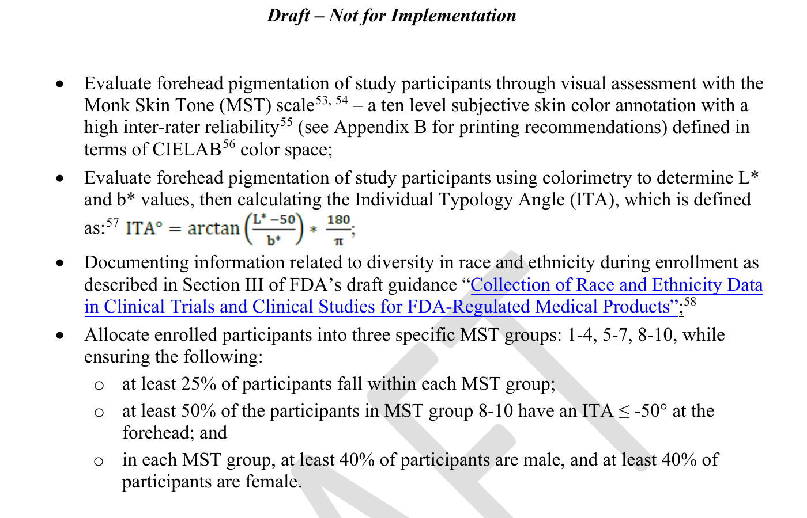
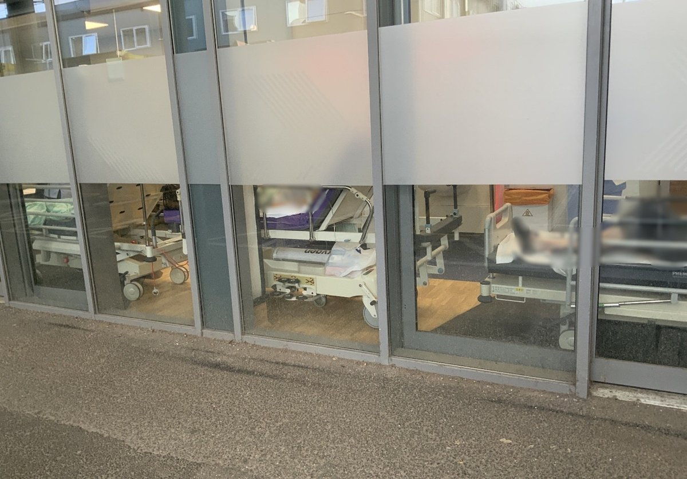
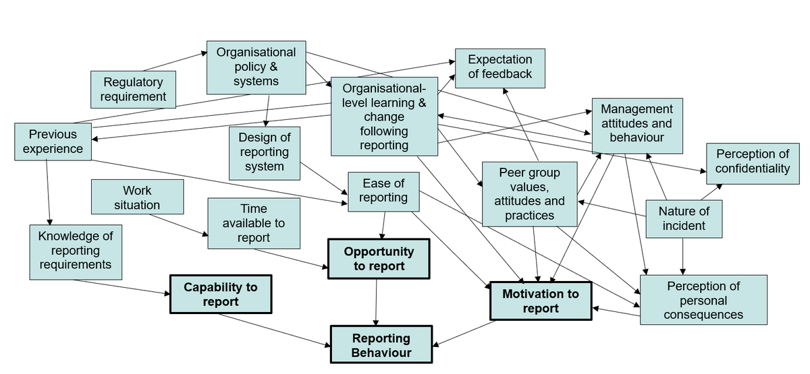
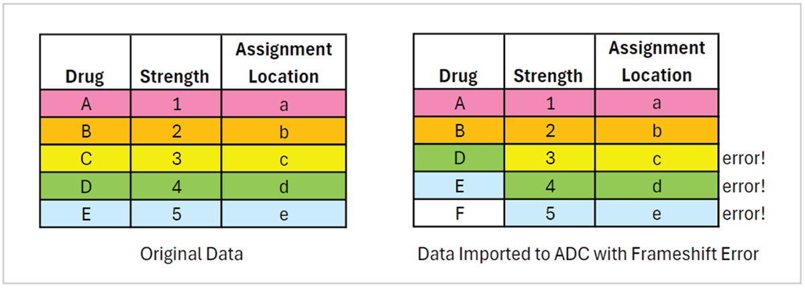
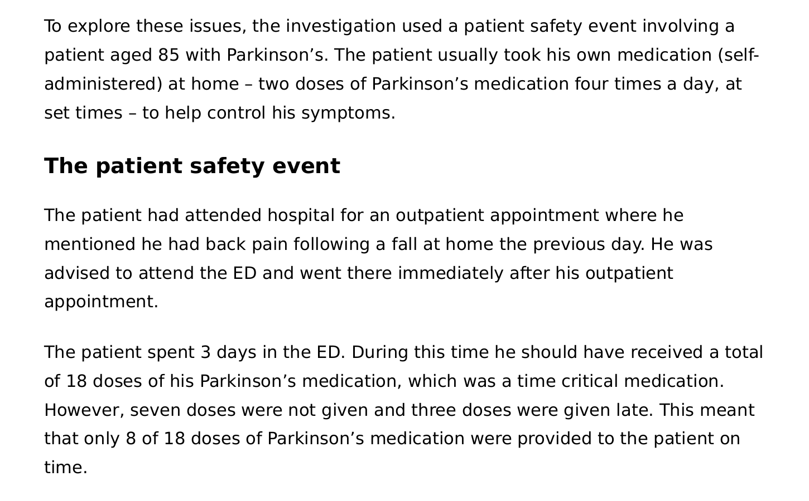
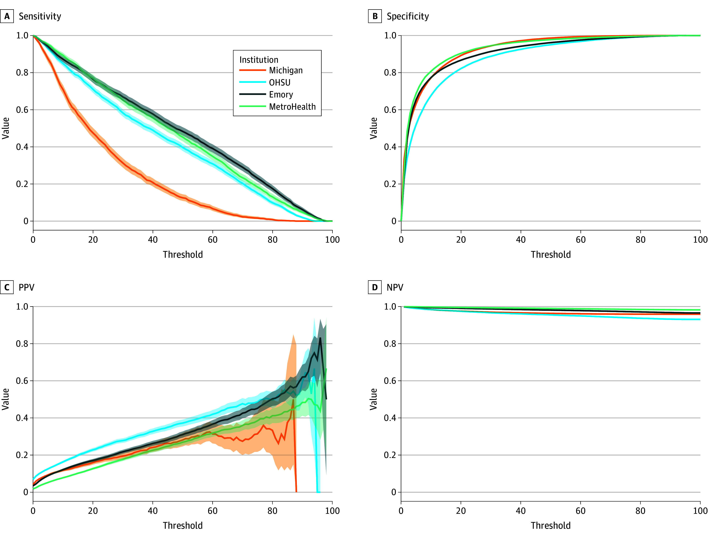
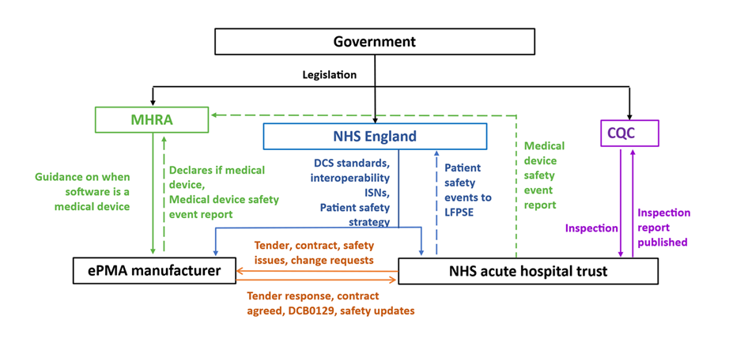

Decision guide — choose a portfolio, not a pile
Default editorial judgment: do not add all eight cases. Use no more than three full contemporary modules in the two-hour introduction. A fourth case may appear only as a two-to-four-minute stress test. Every new case should name the older sequence it replaces.
The eight briefs are a decision library. They are deliberately more complete than the live lecture should be. Their purpose is to let you compare teaching value, stagecraft, evidence burden and duplication before selecting a 2026 portfolio.
The verdict language
| Verdict | Meaning |
|---|---|
| Anchor | Strong enough to organize a major movement of the lecture. It absorbs other examples rather than sitting beside them. |
| Include by substitution | Earns live time only if it replaces an older example doing the same job. |
| Conditional core | Excellent when its particular lens matters to the cohort; unnecessary when another selected case already carries that lens. |
| Short stress test | Use the case to complicate a proposed redesign, not as another full narrative. |
| Governance bridge | Use a compressed upstream systems lesson; reserve the full policy and procurement analysis for a later session. |
| Later / appendix | Valuable course content, but too overlapping, policy-dense or narratively expensive for this introductory lecture. |
Side-by-side decision matrix
| Case | Unique teaching job | Best live form | Stagecraft | Main duplication risk | Editorial verdict |
|---|---|---|---|---|---|
| 1. Pulse oximetry | Measurement uncertainty, validation populations, procurement and equity travel into a precise bedside number. | 8–10 min | Excellent numerical reveal and evidence reconstruction. | With sepsis AI, the lecture can become overly technology-centred. | Conditional core. Include when measurement equity or device validation is a priority. |
| 2. Corridor care | The physical environment becomes an active clinical system with requirements for monitoring, response, privacy and infection control. | 8–10 min | Strong full-field environmental observation. | The Parkinson’s case already contains 44 hours of corridor care. | Conditional core. Use standalone only when Parkinson’s is not the anchor; otherwise embed two corridor beats inside Parkinson’s. |
| 3. Fatigue | Human capacity changes with schedules, workload, handoffs, recovery and culture; shorter shifts alone are not a system redesign. | 3–8 min | Strong clock, workload and reversal reveals. | Can open a second workforce-policy lecture and consume discussion time. | Short stress test. Ask whether a proposed system still works at 04:30; teach the full evidence later. |
| 4. ADC frameshift | Frontline staff detect and contain a digital deployment failure; people are a source of resilience as well as variability. | 8–10 min | Excellent discrepancy-detection and scale reveal. | Some overlap with ePMA governance, but the recovery story is distinct. | Include. It supplies the otherwise missing movement from failure to detection and recovery. |
| 5. Doloral | Product naming, database representation and screen layout make a clinically reasonable misreading more likely; the system then changes the name. | 4–6 min | Exceptional Canadian object theatre: 1 + 1 = 11. |
Duplicates the job of the pill-bottle and EpiPen sequences if simply added. | Include by substitution. Replace one older medication-object run; do not create a fourth object sequence. |
| 6. Time-critical Parkinson’s medication | One documented journey integrates time, roles, records, downtime, after-hours services, environment, self-administration and ownership. | 10–14 min | Best progressive forensic reveal in the bank. | Subsumes corridor care and much of the e-prescribing discussion. | Anchor. This is the strongest choice when the introduction needs one coherent contemporary case. |
| 7. Sepsis AI across four systems | A product family becomes different local models, thresholds, alert burdens and work; performance belongs to the implemented sociotechnical system. | 8–11 min | Strong four-position comparison and public vote. | Can duplicate pulse oximetry’s technology/measurement lens and the Apple Watch/AFib sequence. | Conditional core. Choose it when contemporary AI implementation is important; replace rather than follow the AFib/AI run. |
| 8. Electronic prescribing procurement | Software safety is distributed across standards, regulation, procurement, configuration, assurance, maintenance and feedback. | 4 min bridge or 8–12 min full | Conceptually strong; visually more institutional and less personal. | Heavy overlap with Parkinson’s, ADC and the existing EHR/fax material. | Governance bridge. Use four minutes when Parkinson’s or ADC remains; teach the full version later unless digital procurement is a primary objective. |
Where the overlap is real
| Do not automatically teach both in full | Why | Better editorial move |
|---|---|---|
| Parkinson’s + corridor care | Forty-four hours of the Parkinson’s case occurred in a corridor; the environment is already one causal layer. | Use the Parkinson’s story and borrow the corridor brief’s design requirements for one widening beat. |
| Parkinson’s + ePMA procurement | The Parkinson’s case contains outage, dual charts, missing time-critical functionality and inaccessible information. | Teach the person-centred Parkinson’s case live; use the 2026 ePMA report as the upstream policy answer in notes or a later digital-safety session. |
| ADC + ePMA procurement | Both concern medication software deployment, governance and learning. | Choose ADC for resilience and recovery; choose ePMA only when procurement and national assurance are the intended lesson. |
| Pulse oximetry + sepsis AI | Both can pull the lecture toward algorithms, thresholds and validation. | Choose pulse for measurement equity and procurement; choose sepsis for local implementation and alert workflow. Use both only in a deliberately digital-safety version of the lecture. |
| Doloral + the full pill-bottle/EpiPen run | All are medication object theatre about designed meaning and predictable use. | Let Doloral replace one old object sequence; retain the single strongest historical object as lineage. |
| Sepsis AI + Apple Watch/AFib | Both teach that technical performance does not establish clinical benefit and that implementation creates new work. | Replace or compress the AFib sequence if the 2026 sepsis study is selected. |
Three defensible 2026 portfolios
Portfolio A — one coherent forensic story — recommended
| Module | Live time | Job |
|---|---|---|
| Parkinson’s medication | 12 min | Anchor the widening system boundary. |
| Doloral | 5 min | Give the room one crisp Canadian object reveal. |
| ADC frameshift | 9 min | End the contemporary movement with detection, containment and recovery. |
| Fatigue | 3 min | Stress-test the redesign at 04:30 without starting another lecture. |
Embed, do not add: corridor care becomes a layer inside Parkinson’s. The 2026 ePMA procurement findings become one upstream note. Pulse oximetry and sepsis AI remain optional substitutes.
Why this is the strongest default: it balances a person-centred journey, a physical/display object and a resilient digital near miss. The cases do different teaching jobs and support the same diagnostic arc.
Portfolio B — digital systems and measurement
| Module | Live time | Job |
|---|---|---|
| Doloral | 5 min | Show that data meaning is designed before discussing algorithms. |
| Pulse oximetry | 9 min | Expose hidden uncertainty and inequitable validation. |
| Sepsis AI | 10 min | Show local implementation, thresholds and alert work. |
| ADC frameshift | 8 min | Add recovery and frontline detection. |
Replace: compress the old EHR/scribe, Apple Watch/AFib and one medication-object sequence. Do not place these four modules on top of the existing digital examples.
Risk: this is contemporary and compelling, but it can accidentally teach that human factors is mainly about technology. Preserve a physical-environment or work-conditions beat elsewhere.
Portfolio C — conditions of work
| Module | Live time | Job |
|---|---|---|
| Corridor care | 9 min | Make the physical environment visible as infrastructure. |
| Fatigue | 8 min | Make changing human capacity visible as an operational condition. |
| Doloral | 5 min | Preserve one memorable object-level use error. |
| ADC frameshift | 8 min | Show a system detecting and recovering from failure. |
Omit from the introduction: full Parkinson’s, sepsis AI and ePMA procurement. Retain them for incident-analysis, digital-health or service-design sessions.
Risk: corridor and fatigue invite valuable but expansive workforce and policy discussion. Protect the timebox and return every discussion to a design requirement.
A five-question selection test
Before admitting a case to the live lecture, answer:
- What unique teaching job does it perform? If another selected case performs the same job, choose one.
- What existing sequence does it replace? “Nothing” means the lecture is growing again.
- Can the audience inspect the decisive evidence from the back row? If not, reconstruct or park it.
- Can the central claim be stated without a five-minute qualification? If not, the case belongs in a later session or companion page.
- Does the case return to use error, system conditions and stronger design? A memorable incident without this return is merely another story.
My current inclusion judgment
If the goal is the clearest two-hour introduction, I would select Parkinson’s as the anchor, Doloral as the replacement object, ADC as the resilience close, and fatigue as a short stress test. I would integrate corridor care into Parkinson’s; keep pulse oximetry and sepsis AI as mutually substitutable contemporary modules; and use ePMA procurement only as a four-minute upstream governance bridge or move its full treatment to a later digital-safety session.
That judgment is intentionally reversible. The full briefs below expose the evidence and teaching mechanics so you can change the portfolio without losing the underlying work.
Brief 1 — Pulse oximetry: when a precise number hides uncertainty

Intended change in the audience
Students should leave understanding that SpO2 is an estimate produced by a measurement system—not a patient fact—and that safer care requires designing for uncertainty across device validation, procurement, sensor application, signal interpretation, clinical thresholds and escalation pathways.
One-sentence teaching claim
The use error is not “believing the monitor”; it is building a system that displays an estimate with great confidence, embeds it in hard thresholds, and leaves the clinician to remember every hidden limitation.
90-second hook
Visual sequence
- Full Queen's Blue field. One large number: 94%. No title and no explanatory text.
- Ask: “Would this number reassure you?” Take two or three rapid answers.
- Replace the percent sign with two labels: SpO2 94% and SaO2 <88%.
- Reveal: “Occult hypoxemia: the estimate looks acceptable; the arterial measurement is not.”
- Reveal the University of Michigan result: among paired measurements with SpO2 92–96%, SaO2 was below 88% in 11.7% of measurements from Black patients versus 3.6% from White patients.
Suggested spoken script
“You are looking at a familiar number: 94. It feels objective, immediate and actionable. Would it reassure you? In a 2020 hospital cohort, when the monitor showed 92 to 96, an arterial blood gas still showed saturation below 88 in 11.7 percent of measurements from Black patients, compared with 3.6 percent from White patients. The number did not announce that its uncertainty was unevenly distributed. So: who made the error? The clinician? The patient? Or a system that turned an optical estimate into a crisp threshold?”
Attribution on slide: Sjoding MW et al., N Engl J Med 2020;383:2477–2478. DOI: 10.1056/NEJMc2029240.
Accuracy note: The 11.7% and 3.6% values are measurement-level results in the University of Michigan cohort: 88/749 and 99/2,778 paired measurements, respectively. Do not call them population prevalence or say that every darker-skinned patient is affected.
Ten-minute teaching arc
| Time | Slide/job | Teaching action and speaker direction |
|---|---|---|
| 0:00–1:30 | Hook / observation | Run the 94% reveal above. Let the class commit before explaining. The pedagogic value is the felt confidence in the number. |
| 1:30–2:30 | Axiom | “SpO2 is an estimate. SaO2 is the reference measurement.” Explain only what is needed: two wavelengths of light, pulsatile arterial signal, empirically calibrated algorithm. Avoid a physics lecture. |
| 2:30–4:00 | Result | Show 11.7% versus 3.6%, then the replication cohort: 17.0% versus 6.2%. Say “nearly threefold in these cohorts,” not “threefold for every device and setting.” |
| 4:00–5:20 | System map | Build the chain one node at a time: validation population → hardware/algorithm → patient and perfusion → application/environment → display → threshold/protocol → decision/action. Ask where the “user” begins and ends. Answer: there is no clean boundary. |
| 5:20–6:40 | Contemporary caveat | Complicate the easy story. A 2026 prospective ICU cohort found Black race associated with about a 1 percentage-point positive bias, but objective skin-pigmentation measures were not associated. Say: “Race identified a disparity; it did not establish a single mechanism.” |
| 6:40–7:50 | Use-error reframing | Move common “operator errors”—motion, cold hand, wrong sensor, placement, ambient light—onto the system map. These are foreseeable use conditions to be detected, prevented or made visible, not moral failures. |
| 7:50–9:00 | Regulatory redesign | Show what redesign looks like before the bedside: the FDA’s January 2025 draft proposes ≥150 diversely pigmented participants, ≥3,000 paired SpO2/SaO2 observations, subjective and objective skin-tone measures, and performance across saturation bands. Clearly label this draft, non-binding, not yet final as of 13 July 2026. |
| 9:00–10:00 | Audience redesign / return | Give eight pods of 5–6 students one system node each. Sixty seconds: “Add one defence that does not depend on a clinician remembering a caveat.” Take four ten-second answers. Close: “The number is not the patient.” |
System map
Use this as a horizontal build rather than a small all-at-once diagram:
Who was represented in development and calibration?
↓
Sensor wavelengths + probe geometry + algorithm + device model
↓
Patient: pigmentation, perfusion, temperature, physiology, dyshemoglobin
↓
Use conditions: sensor choice, site, fit, motion, nails, ambient light, moisture
↓
Signal-quality handling + displayed SpO2 + hidden uncertainty
↓
Alert and guideline thresholds + EHR/risk-score ingestion
↓
Clinician and patient interpretation: trend, symptoms, examination, context
↓
Oxygen / triage / testing / treatment / discharge decision
↓
Outcome, incident reporting, procurement feedback and post-market surveillanceSystems-thinking prompts
- Where is uncertainty introduced?
- Where is it suppressed or made invisible?
- Which downstream systems treat SpO2 as if it were ground truth?
- Who gets an opportunity to challenge the number?
- Where would a defence be strongest: acquisition, display, workflow, protocol, procurement or regulation?
Use-error framing
| Blame-oriented wording | Human-factors reframing |
|---|---|
| “The nurse trusted the monitor.” | The display and protocol gave a precise estimate privileged status over symptoms and other data. |
| “The probe was put on incorrectly.” | Sensor selection, placement and signal adequacy are foreseeable use conditions; the device and workflow should support correct application and make poor signal quality salient. |
| “The patient's hand was cold / moving.” | Perfusion, temperature and motion are properties of the real use environment, not deviations invented by the patient. |
| “Dark skin confuses the device.” | Some studies show racial and pigmentation-related performance disparities, but device model, calibration, perfusion, physiology and measurement methods also matter. The patient is not the defect. |
| “Clinicians should just remember the limitation.” | Memory is a weak safety control. Use labelling, procurement criteria, trend displays, signal-quality cues, escalation rules and confirmatory testing pathways. |
Audience interaction for 44–45 students
Option A — one-minute commitment test
Display SpO2 94% and ask everyone to vote simultaneously with a hand:
- fist: reassured;
- one finger: uncertain / seek more context;
- two fingers: escalate or confirm now.
After the reveal, ask: “What information would have changed your vote?” Capture answers under patient, device, environment, workflow. This prevents the discussion from collapsing into “order an ABG for everyone.”
Option B — eight-node redesign sprint
Assign the eight pods one node each: validation, procurement, sensor, application, display, protocol, clinical assessment, feedback. Prompt:
“You may change only your node. Design one control that makes a use error less likely or less harmful without adding a generic warning banner.”
Strong answers include procurement evidence by device model and pigmentation; signal-quality indicators that are visually coupled to the number; trend plus range rather than isolated value; a protocol for discordant signs/symptoms; and a path to blood-gas confirmation when clinically warranted.
Exact defensible numbers
| Claim | Exact evidence | Defensible phrasing | Necessary caveat |
|---|---|---|---|
| Landmark occult-hypoxemia disparity | University of Michigan: 88/749 Black-patient measurements, 11.7% (95% CI 8.5–16.0), versus 99/2,778 White-patient measurements, 3.6% (95% CI 2.7–4.7), when SpO2 was 92–96% and SaO2 <88%. Multicentre ICU cohort: 160/939, 17.0%, versus 546/8,795, 6.2%. | “In two retrospective cohorts, occult hypoxemia occurred nearly three times as often in measurements from self-identified Black patients as White patients.” | Measurement-level retrospective analysis; race was a proxy, not an objective pigmentation measure; device and clinical context vary. |
| COVID-19 treatment-threshold study | 7,126 patients; 1,216 had 32,282 concurrent pairs. At least one occult-hypoxemia episode occurred in 30.2% Asian, 28.5% Black, 29.8% non-Black Hispanic, 17.2% White patients. In the modelled threshold analysis, Black patients had a 29% lower hazard of treatment-eligibility recognition (HR 0.71, 95% CI 0.63–0.80); among those ultimately recognized, median delay was 1.0 hour longer (95% CI 0.23–1.9). | “In this COVID-19 cohort, differential oximeter error was associated with delayed or unrecognized eligibility under oxygen-threshold rules.” | Retrospective; treatment eligibility was modelled from predicted SaO2, not a randomized causal estimate; COVID-era thresholds should not be generalized to every disease or current protocol. |
| Health Canada performance context | Health Canada says regulated pulse oximeters typically read within 2%–4% of ABG, while noting that error can be clinically significant and readings can be less accurate with dark skin and at lower true saturation. | “A few percentage points can matter when a protocol uses a hard cutoff.” | “Typically” is not a guarantee for every device, patient or condition; the page provides general guidance, not a device comparison. |
| Current prospective nuance | 2026 Emory ICU cohort: 198 adults, 709 paired measurements. Black race associated with bias estimate +1.032 percentage points (95% CI 0.200–1.862; P=.02); objective ITA and melanin index were not significantly associated. Hidden hypoxemia: 4.7% of pairs in the darkly pigmented group versus 3.8% in the lighter group; Black versus non-Black 4.9% vs 1.4%, P=.06. | “The disparity remains real enough to design for, but skin pigmentation alone did not explain it in this cohort.” | One health system, one sensor family, high SpO2 distribution, retrospective extraction of pairs up to five minutes apart, perfusion index unavailable; not proof that pigmentation never matters. |
| FDA draft validation proposal | January 2025 draft: 150 or more participants; 3,000 or more paired observations; ≥20 pairs per participant spanning SaO2 70–100%; ≥25% of participants in each of three Monk Skin Tone bands; objective ITA plus subjective MST measures. | “The proposed redesign changes who is represented and how performance is demonstrated before market entry.” | Still labelled draft and non-binding by FDA as of 13 July 2026; do not describe it as current mandatory law. |
What not to overclaim
- Do not say “pulse oximeters are racist” as a complete causal explanation. Say that multiple studies found racial disparities in measurement and clinical recognition, while mechanisms and performance vary by device, setting, perfusion, physiology and how pigmentation is measured.
- Do not equate self-identified race with skin pigmentation. Race is a social category and an imperfect proxy; people within a racial category have heterogeneous pigmentation.
- Do not say melanin is the only proven mechanism. The April 2026 prospective cohort found a race association but no association with its objective pigmentation measures, and identified unresolved perfusion and measurement limitations.
- Do not imply that pulse oximetry is useless. Health Canada and FDA continue to regard it as clinically useful when interpreted with trends, symptoms and other information.
- Do not propose a race-based correction factor. A single adjustment can hide variance and reify race as biology.
- Do not say every discordant reading requires an ABG. Health Canada recommends considering blood gas when signs conflict or doubt exists; clinical protocols and invasiveness still matter.
- Do not infer mortality causation from the COVID-19 recognition study. Its authors used “may contribute,” and explicitly noted that downstream consequences required further study.
- Do not use the 2020 11.7% versus 3.6% result as a universal current-device prevalence estimate.
Altitude Blue slide and image suggestions
Axiom / hook — “94%”
Queen's Blue stage; 180–220 px white number; no frame. Hard cut to “SpO2 94% / SaO2 <88%.” Keep all explanation spoken.Observation — the threshold trap
Full-field native diagram of a monitor number feeding a protocol threshold. Use Queen's Gold only on the exact cutoff; Queen's Red appears only when the reference SaO2 is revealed. This should be an original vector diagram, not a stock monitor photo.Original editorial image — optical estimate
Generate a clean, medically neutral cross-sectional illustration of a fingertip in a pulse-oximeter clip with red and infrared light paths, shown across a continuous range of skin pigmentation. No faces, no brand, no clinical reading. Credit: “Conceptual illustration generated for HQRS 846; not to optical scale.” Never use it as empirical evidence.Result — 11.7 / 3.6
Rebuild the comparison at projection scale rather than screenshotting the NEJM figure. Use identical denominators in a small footer. Attribution must remain visible. Follow immediately with a slide carrying the multicentre 17.0 / 6.2 replication at the same scale.Evidence complication — “Race found the disparity. It did not explain the mechanism.”
Warm-paper axiom slide, then a dedicated result slide for the 2026 cohort: Black race +1.032 points; ITA/melanin not significant. This protects against a simplistic “one pigment, one fix” narrative.Observation — official warning
If an authentic web artifact is useful, dedicate a slide to the Health Canada “Pulse oximeters: For health care providers” page, enlarged so the back row can read the two key paragraphs. Do not embed it as a browser card. Add page title, date (30 Dec 2022) and URL in the observation footer.System map
Build one node per hard cut across consecutive slides. Do not show the entire map in 18-point type. The final overview may show all nodes, but the spoken focus stays on one node at a time.Return — “The number is not the patient.”
Queen's Blue, one line, no logo beyond a small unaltered Queen's mark. Pause before advancing.
Speaker notes
- “This is not a story about a bad nurse or a bad patient. It is a story about a measurement system whose uncertainty is easy to ignore.”
- “SpO2 and SaO2 are not interchangeable labels. One is a non-invasive estimate; the other is the arterial reference used in these studies.”
- “Notice how a one- or two-point average bias can sound small while becoming consequential at a hard treatment threshold.”
- “The same visual precision is carried into the EHR, early-warning scores and protocols. The estimate becomes more authoritative as it travels.”
- “Race helped investigators see the inequity. Race alone does not tell us whether the pathway is pigmentation, perfusion, illness, device calibration, structural inequity or some interaction.”
- “A warning in a manual is not a strong control. What would we change so the next person does not need heroic memory?”
- “Health Canada’s practical advice is not ‘ignore the device.’ It is to use trends and other clinical information, and take a precautionary approach when signs and readings conflict.”
Primary and authoritative sources
Sjoding MW, Dickson RP, Iwashyna TJ, Gay SE, Valley TS. “Racial Bias in Pulse Oximetry Measurement.” New England Journal of Medicine. Published 16 Dec 2020;383:2477–2478.
Article: https://www.nejm.org/doi/full/10.1056/NEJMc2029240
DOI: https://doi.org/10.1056/NEJMc2029240
Supports the 11.7%/3.6% and 17.0%/6.2% results and the study definition of occult hypoxemia. The article notes that the clinical significance was not fully known.Fawzy A, Wu TD, Wang K, et al. “Racial and Ethnic Discrepancy in Pulse Oximetry and Delayed Identification of Treatment Eligibility Among Patients With COVID-19.” JAMA Internal Medicine. Published online 31 May 2022;182(7):730–738.
Full text: https://jamanetwork.com/journals/jamainternalmedicine/fullarticle/2792653
DOI: https://doi.org/10.1001/jamainternmed.2022.1906
Supports the cohort sizes, occult-hypoxemia proportions, modelled recognition hazards and one-hour median delay. The article was corrected 22 Aug 2022 for errors in Figure 3; use the corrected version linked above.Health Canada. “Pulse oximeters: For health care providers.” Page date 30 Dec 2022.
https://www.canada.ca/en/health-canada/services/drugs-medical-devices/pulse-oximeters/health-care-providers.html
Authoritative Canadian guidance on ABG as reference, typical regulated-device accuracy, dark-skin and low-saturation limitations, real-world factors, trends and precautionary management when signs conflict.US Food and Drug Administration. “Pulse Oximeters for Medical Purposes—Non-Clinical and Clinical Performance Testing, Labeling, and Premarket Submission Recommendations.” Draft guidance, Jan 2025.
Landing page: https://www.fda.gov/regulatory-information/search-fda-guidance-documents/pulse-oximeters-medical-purposes-non-clinical-and-clinical-performance-testing-labeling-and
PDF: https://www.fda.gov/media/184896/download
Supports the proposed sample, paired-observation and pigmentation-measure requirements. The live FDA page continued to label it “Draft—Not for implementation” on 13 Jul 2026.Yang P, Felzer JR, Tovar S, et al. “The Association of Skin Pigmentation With Pulse Oximetry Bias in Adult Patients in the ICU.” CHEST Critical Care. Available online 29 Apr 2026;100277, in-press uncorrected proof when checked.
Article: https://www.sciencedirect.com/science/article/pii/S2949788426000444
DOI: https://doi.org/10.1016/j.chstcc.2026.100277
Supports the 198-patient/709-pair prospective cohort, race association, absence of an ITA/melanin association and stated limitations. Recheck the final paginated version before a public 2027 reuse because the accessed article was an uncorrected proof.Travers AB, Terry CR, Merrell WP, et al. “Investigation of Skin Pigmentation Effect on Performance of Pulse Oximetry: Feasibility of a Study Examining the Effect of Skin Pigment on Pulse Oximetry.” CHEST Critical Care. Dec 2025;3(4):100209.
https://www.sciencedirect.com/science/article/pii/S2949788425000826
DOI: https://doi.org/10.1016/j.chstcc.2025.100209
Useful optional caveat: a feasibility sample of 50 patients/80 valid pairs found no occult events and no significant light/dark difference; it was designed to test feasibility, not settle the clinical question.
Brief 2 — Corridor care: when “temporary” becomes a care system

Intended change in the audience
Students should leave seeing corridor care as a whole-system capacity and design problem—not an emergency-department staff failure—and understand that immediate harm reduction and long-term elimination of the need for temporary spaces are simultaneous responsibilities.
One-sentence teaching claim
A corridor does not become a care environment when a stretcher arrives; it becomes an underdesigned care system when the bed, staff, information, medication, monitoring, emergency response, privacy and upstream flow do not arrive with it.
90-second hook — the 44-hour corridor
Visual sequence
- Queen's Blue field: 52 hours in the ED.
- Hard cut: 44 hours in a corridor.
- Hard cut: 18 time-critical doses due.
- Reveal three blocks: 7 missed / 3 late / 8 on time.
- Ask: “Who failed?” Hold the silence.
- Replace the question with the system conditions: no defined responsibility; no dedicated ED pharmacy support; no secure medication storage; e-prescribing outage and paper/electronic split; inaccessible neurology letters; out-of-hours information gap; contradictory records; no medication trolley in the corridor.
Suggested spoken script
“An 85-year-old man with Parkinson’s spent 52 hours in an emergency department—44 of them in a corridor. Eighteen doses of time-critical medication were due. Seven were not given, three were late, and only eight arrived on time. Who failed? Before we answer, add the rest of the system: no defined owner for identifying and prescribing time-critical medication; no dedicated ED pharmacy support; no secure storage beside the patient; an electronic prescribing outage; paper and electronic charts; specialist letters not available; and no medication trolley in the corridor. The word ‘missed’ makes this sound like one person's lapse. The investigation describes a system that repeatedly made the right action difficult.”
Attribution on slide: Health Services Safety Investigations Body, Medication not given: administration of time critical medication in the emergency department, published 5 Dec 2024. Official report.
Causation guardrail: The patient died four weeks after transfer to a ward; the death certificate included bronchopneumonia, Parkinson’s and frailty. The report does not establish that corridor care or the missed medication caused his death. Do not imply that it does.
Ten-minute teaching arc
| Time | Slide/job | Teaching action and speaker direction |
|---|---|---|
| 0:00–1:30 | Hook / case timeline | Run the 52/44/18/7/3/8 sequence. Ask “Who failed?” before showing system conditions. |
| 1:30–2:30 | Definition / full-field case | Use HSSIB’s definition: spaces not designed, staffed or equipped for care—corridors, waiting rooms, chairs on wards, ambulances outside EDs and other non-inpatient spaces. Emphasize that “temporary” describes organisational intent, not necessarily patient duration. |
| 2:30–4:00 | System map | Build the care pathway: community/primary care → ambulance/ED → diagnostics/consults → inpatient bed → discharge/community/social care. Show the corridor as the visible overflow created by constraints across the entire path. |
| 4:00–5:20 | Scale / result | UK snapshot: across five March 2025 snapshots in 165 EDs, 17.7% (n=10,042 patient observations) were in escalation areas; 54.5–61.1% of those were in non-clinical areas such as corridors. Then localize: Canada recorded 16.1 million unscheduled ED visits in 2024–25; 90% of admitted-patient ED visits ended within 48.5 hours. Say explicitly that CIHI does not identify corridor placement. |
| 5:20–6:50 | Risk trade-off | HSSIB found staff were often making a “best worse” choice: corridor, waiting unseen, remaining in an ambulance, or an ambulance unavailable for a community emergency. Avoid the false binary “corridor bad / room good”; the system is distributing risk. |
| 6:50–8:10 | Use-error analysis | Take three apparent errors from the case—late medication, poor monitoring, loss of privacy—and trace the missing environmental and organisational supports. Include the paradox that leaders may resist adding call bells or sockets for fear of normalizing corridor care, even when the spaces are already used. |
| 8:10–9:20 | Audience redesign sprint | Eight pods, each with one domain: monitoring, medication, emergency response, staffing, information, dignity, patient selection, upstream flow. Prompt below. Ask for four ten-second defences. |
| 9:20–10:00 | Return / dual duty | End with two simultaneous obligations: reduce harm tonight and reduce the need tomorrow. “Designing a safer temporary space is not permission to normalize it.” |
System map
Build this as a patient-flow line with constraints appearing above and safety consequences below:
PRIMARY / COMMUNITY CARE
access, prevention, home support
↓
AMBULANCE + ED ARRIVAL
demand, handover, triage, initial assessment
↓
ED CARE
staff, cubicles, diagnostics, specialty opinions, medications
↓
INPATIENT BED
bed availability, cleaning, staffing, specialty capacity
↓
DISCHARGE PATHWAY
pharmacy, transport, rehab, long-term care, home/community/social care
When flow < demand, overflow appears in a temporary care environment.
The temporary environment must still carry:
identity + ownership + observations + medication + equipment + call system
+ privacy + hydration/toileting + deterioration response + handover + duration trackingHuman Tech Ladder version
- Political: funding, bed and community-care capacity, ambulance handover policy, regulatory tolerance.
- Organisational: escalation rules, ownership, exclusion criteria, staffing deployment, pharmacy and specialty availability, discharge coordination.
- Team: handover, nurse supervisor role, who owns observations and time-critical medication, visibility of corridor patients.
- Psychological/information: location coding, overdue-observation alerts, medication reconciliation, patient status displays, competing goals.
- Physical: line of sight, call bells, oxygen/suction, power, medication storage, computer access, width, light, noise, toilets and privacy.
The ladder makes the core point: a staff member at the physical end cannot repair political and organisational mismatches through vigilance alone.
Use-error framing
| Blame-oriented wording | Human-factors reframing |
|---|---|
| “The nurse forgot the medication.” | No dedicated role owned identification/prescribing; the corridor lacked a medication trolley and secure storage; staff had to leave patients to obtain medicines; digital and paper records split during an outage. |
| “The patient did not call for help.” | Many temporary spaces had no emergency call bell; portable bells could go missing; visibility and response routes were variable. |
| “Observations were overdue.” | Temporary beds may be outside the normal location model and line of sight. Safer sites extended digital observation boards to include temporary spaces and made overdue observations salient. |
| “The clinician discussed private information in public.” | A corridor may offer no private space. HSSIB heard of difficult diagnoses being discussed where there was nowhere else. The environment creates a predictable confidentiality compromise. |
| “The family should have managed the home medication.” | The patient and family were sources of expertise, but self-administration had no supported process and the environment had no secure storage. Patient heroics are not a medication system. |
| “ED staff should stop using corridors.” | The corridor is a downstream manifestation of demand, inpatient capacity, diagnostics, discharge and community/social-care constraints. Local staff are balancing risks they do not control alone. |
Audience interaction for 44–45 students
Eight-pod “no new beds tonight” sprint
Assign one domain to each pod of 5–6 students:
- monitoring and deterioration;
- time-critical medication;
- emergency response / call system;
- staffing, competence and supervision;
- information, handover and location tracking;
- dignity, privacy, nutrition and toileting;
- patient selection and exclusion criteria;
- patient flow across the hospital and community.
Prompt:
“It is 19:00. You cannot create a new inpatient bed tonight. Design one safeguard that reduces immediate risk without pretending the corridor is acceptable. Name the owner, trigger and failure signal.”
After 60–75 seconds, take four ten-second reports. Then ask the whole room:
“Which of these controls reduces harm tonight? Which reduces the need for the corridor tomorrow?”
This preserves the ethical tension. Students should not “solve” corridor care by decorating the corridor, nor reject practical mitigations because they fear normalization.
Optional provocative vote
Display: “Installing call bells normalizes corridor care.” Ask agree/disagree. Then reveal HSSIB’s observation that some leaders resisted physical adaptation for exactly this reason, while better-adapted spaces appeared calmer and more organised. Debrief as a safety paradox: refusing a control does not eliminate the exposure.
Exact defensible numbers
| Claim | Exact evidence | Defensible phrasing | Necessary caveat |
|---|---|---|---|
| HSSIB medication event | Patient age 85; 52 hours in ED, 44 in a corridor; 18 doses due, 7 missed, 3 late, 8 on time. | “The event shows how corridor conditions interacted with roles, information, e-prescribing, pharmacy access and storage.” | Single investigated event. Death four weeks later is not proof of causal harm from the corridor or missed doses. |
| HSSIB temporary-environment investigation | Direct observation in 7 hospitals Aug–Oct 2025; evidence from a further 6 hospitals Nov–Dec; remote discussions with staff at 4 other hospitals. Observed nursing ratios ranged 1:4 to 1:6 excluding healthcare assistants. In some sites a nurse supervisor oversaw up to 24 extra care spaces. | “The investigation documents recurring design risks and local adaptations across multiple English hospitals.” | It was a rapid, bounded investigation, not a representative prevalence study; HSSIB warns that definitions and reporting are inconsistent. Do not add the hospital counts together as a national sample estimate without explaining the differing evidence routes. |
| Duration in temporary space | HSSIB was told some temporary stays were up to 1 hour, but where acuity/exclusion constraints prevented movement patients could remain a few days. | “Temporary intent can become multi-day exposure.” | Qualitative report from participating hospitals, not a measured duration distribution. |
| UK point prevalence | Prospective cross-sectional study in 165 UK EDs, five snapshots in March 2025. 17.7% (n=10,042) of ED patient observations were in escalation areas. Of escalation-area patients, 54.5%–61.1% were in non-clinical areas such as corridors. ED occupancy ranged from 1.0 to 2.4 patients per cubicle across snapshots. No resuscitation cubicle was available at 10.5%–26.2% of sites. | “At the sampled times, almost one in five ED patient observations occurred in an escalation area.” | Point-prevalence snapshots, not annual incidence or duration; the same patient may be present at more than one snapshot; UK findings do not supply a Canadian prevalence. It did not establish patient-level causal outcomes. |
| Canadian pressure context | CIHI final 2024–25 data: more than 16.1 million unscheduled ED visits. For admitted patients, 90% of ED visits were completed within 48.5 hours; for discharged patients, 90% within 8.0 hours. About 12% of visits resulted in admission; half of admitted patients waited less than 16 hours for transfer, while one in ten waited almost two days or more. | “Long ED stays for admitted patients show the Canadian flow pressure in which temporary spaces can emerge.” | CIHI measures ED visit duration, not whether a patient was in a corridor. Do not label 48.5 hours as “corridor time.” Reporting participation and provincial coverage should be checked in the CIHI tables for any local comparison. |
HSSIB risk and adaptation inventory
This can become a back-row-readable sequence, one risk per slide.
| System property | Risk in temporary environment | Adaptations HSSIB observed or suggested |
|---|---|---|
| Visibility and monitoring | Deterioration or falls can be missed when patients are outside line of sight or not represented in normal bed/observation systems. | Visible locations; electronic boards showing due/overdue observations; temporary locations added to digital observation systems; nominated supervisor. |
| Emergency response | No fixed call bell; unclear location; narrow or obstructed routes; compromised response to collapse or fire. | Fixed emergency call systems, voice communication devices, portable patient bells, multidisciplinary fire/estates/clinical risk assessment. |
| Equipment | No piped oxygen or suction, insufficient sockets, equipment distant. | Nearby emergency equipment, mini nursing stations, carefully installed sockets/oxygen/suction where justified. |
| Medication | No secure storage or trolley; staff leave the area to source medication; ePMA access and self-administration process do not fit the space. | Defined role, ED pharmacy support, time-critical-medication prompts, supported self-administration and documentation, local stock/access redesign. |
| Staffing and supervision | Extra spaces silently expand workload; redeployed staff may lack ED familiarity; no one sees the whole temporary area. | Ratios based on number and acuity; consistent experienced staff; familiarization; supervisor who is not absorbed in direct care. |
| Dignity/basic needs | No privacy for history, diagnosis or personal care; noise/light interfere with sleep; food, water and toileting can be missed. | Private space for conversations and invasive/personal care; active patient engagement; duration tracking; quieter areas where possible. |
| Patient selection | Frail, unassessed, mental-health or deteriorating patients can enter a space that cannot support their needs. | Explicit inclusion/exclusion criteria, multidisciplinary placement decisions, escalation and frequent reassessment. |
| Whole-system flow | Local optimization can shift risk to ambulances, wards, rehab, community care or other patients. | Real-time flow data; hospital-wide governance; coordinated diagnostics, specialties, cleaning, pharmacy, allied health, discharge and community/social care. |
What not to overclaim
- Do not say corridor care caused the HSSIB patient’s death. The report does not establish that causal chain.
- Do not call the 17.7% UK snapshot a Canadian prevalence, annual rate or individual risk.
- Do not treat every long Canadian ED stay as corridor care. CIHI does not report location in these figures.
- Do not say temporary spaces are always less observable than a regular bed. HSSIB noted that some visible temporary locations supported monitoring better than some permanent spaces, although privacy and dignity suffered.
- Do not say staff ratios of 1:4–1:6 are a universal safe standard. They are observations from visited sites, and suitability depends on acuity, competence and support.
- Do not claim that adding sockets, call bells or monitoring “solves” corridor care. These are immediate risk mitigations; they can also create knock-on risk or reduce other services, such as when a rehabilitation gym becomes a ward.
- Do not blame emergency-department demand only on “inappropriate patients.” HSSIB and CIHI locate delay across primary/community care, diagnostics, inpatient capacity, discharge and social care.
- Do not imply that refusing to adapt a used space prevents normalization. HSSIB observed a real tension: some hospitals resisted adaptation, but the spaces were still regularly used.
- Do not portray staff workarounds as deviance. Many are resilience strategies under mismatch; study which ones preserve safety and which transfer hidden risk.
Altitude Blue slide and image suggestions
Case timeline — 52 / 44 / 18 / 7 / 3 / 8
Six consecutive slides, same layout and fixed baseline. Queen's Gold marks “due/on time”; Queen's Red appears only for “missed/late.” No patient photograph and no fictional face.Full-field observation — the care space that is missing its system
Commission an original editorial illustration: a long hospital corridor with a stretcher, but show the absent infrastructure as negative-space outlines—call bell, oxygen/suction, secure medication locker, monitor, privacy screen, computer and handwashing point. No logos, no identifiable hospital and no patient face. Credit it as a conceptual generated illustration, not documentary evidence.Object theatre — a call bell
One near-life-size call bell on Queen's Blue, followed by an empty wall plate. Spoken line: “We call this patient failure to ask for help—until we notice there is nothing to press.” Use a generic original photograph or generated object, not a branded product.System map — the corridor is downstream
Build primary/community → ambulance/ED → diagnostics/consults → inpatient → discharge/community one slide at a time. On the final overview, place “corridor” below the bottleneck as the visible symptom, not the root cause.Result — 17.7%
Queen's Blue field with “17.7%” at 180 px and a single line: “of ED patient observations across five UK snapshots were in escalation areas.” Footer carries “165 EDs · March 2025 · TERN, EMJ 2026 · cross-sectional.” Follow with a dedicated caveat slide: “A snapshot shows scale. It does not prove harm.”Canadian context — 48.5 hours
Warm-paper result slide: “90% of admitted-patient ED visits ended within 48.5 h.” The next slide must say: “CIHI measured time—not corridor location.” This two-slide pairing prevents an attractive but false visual inference.Before / after evidence — underdesigned versus risk-mitigated space
Two matched, full-field plan-view diagrams at identical scale. Before: stretcher only. After: ownership, line of sight, call system, equipment, monitoring, privacy route and escalation trigger. Label the second “harm reduction, not normalization.”Return — two duties
Split field without cards: left warm paper, Reduce harm tonight; right Queen's Blue, Reduce the need tomorrow. Gold route crosses both. This is the core synthesis.Authentic-source option
The HSSIB January 2026 report contains photographs/figures of temporary care environments and adaptations. If used in classroom slides, show each on a dedicated full-field observation slide with report title, date and URL. Confirm HSSIB image-reuse terms before public web publication; otherwise use the original conceptual illustration above.
Speaker notes
- “Calling it a hallway makes it sound like a location problem. Calling it a temporary care environment lets us ask what care functions the environment must support.”
- “The patient did not enter a blank corridor. He entered a system with staffing, records, medication, policies, opening hours and missing infrastructure.”
- “Seven missed doses sounds like seven moments of inattention. The investigation found repeated conditions that made timely medication hard: ownership, storage, access, digital outage and information continuity.”
- “Staff in these reports did not want corridor care. They were often choosing the ‘best worse’ option among risks distributed across the hospital, ambulance service and community.”
- “There is a trap in saying ‘do not normalize it’ if that becomes a reason not to install an emergency call bell in a space already used every day.”
- “But there is an equal trap in making the corridor efficient enough that leadership stops seeing the upstream failure. We have two duties at once.”
- “Notice that the corridor patient may be outside the digital map as well as the floor plan. If the system does not know where the patient is, it cannot reliably know when observations, medication or escalation are due.”
- “The visible user is the nurse. The effective system includes community support, ambulance response, diagnostics, cleaning, pharmacy, allied health, inpatient beds and discharge services.”
Primary and authoritative sources
Health Services Safety Investigations Body. “Medication not given: administration of time critical medication in the emergency department.” Published 5 Dec 2024.
https://www.hssib.org.uk/patient-safety-investigations/medication-related-harm/investigation-report/
Primary national patient-safety investigation supporting the 85-year-old patient case, 52/44-hour duration, medication counts and interacting system factors. The report uses a CARe/resilient-healthcare approach and explicitly avoids reducing the event to individual error.Health Services Safety Investigations Body. “Patient care in temporary care environments.” Published 8 Jan 2026; investigation conducted Aug–Dec 2025.
HTML: https://www.hssib.org.uk/patient-safety-investigations/patient-care-in-temporary-care-environments/investigation-report/
PDF: https://www.hssib.org.uk/patient-safety-investigations/patient-care-in-temporary-care-environments/investigation-report/pdf/
Primary safety-investigation evidence for the definition, risks, hospital sample, observed adaptations, data gaps, staff experience and safety observation O/2026/080.Trainee Emergency Research Network (TERN). “Understanding corridor and escalation area care in 165 UK emergency departments: a multicentre cross-sectional snapshot study.” Emergency Medicine Journal. Epub 9 Dec 2025; 2026;43:72–80.
DOI: https://doi.org/10.1136/emermed-2025-215301
University of Bristol record with abstract: https://research-information.bris.ac.uk/en/publications/4c023266-1592-4eef-bc03-bc2a88e982ba/
Peer-reviewed primary prevalence study supporting the 165-site, five-snapshot and 17.7% findings. Keep the cross-sectional limitations visible.Canadian Institute for Health Information. “NACRS emergency department visits and lengths of stay.” Updated/released 13 Apr 2026; complete-year data Apr 2024–Mar 2025.
https://www.cihi.ca/en/nacrs-emergency-department-visits-and-lengths-of-stay
Authoritative Canadian source for >16.1 million unscheduled ED visits and the 48.5-hour/8.0-hour 90th-percentile comparison.Canadian Institute for Health Information. “Longer ED stays reflect growing patient complexity and delays in admission.” Current system-perspective analysis checked 13 Jul 2026.
https://www.cihi.ca/en/emergency-department-wait-times-in-canada-insights-from-a-health-system-perspective/longer-ed-stays-reflect-growing-patient-complexity-and-delays-in-admission
Supports the 12% admission share, median transfer wait below 16 hours, one-in-ten near-two-day wait and patient-flow framing. It includes a patient partner’s account of hallway admission, but obtain permission/check CIHI reuse terms before reproducing the quotation beyond a short attributed classroom excerpt.
Suggested final bridge between the two cases
Use one sentence if these modules appear in the same lecture:
“In pulse oximetry, uncertainty disappears inside a number; in corridor care, infrastructure disappears around a patient. Human factors makes both absences visible.”
Then return to the lecture's governing axiom:
Humans are fallible. We will err. Design the system so ordinary error is visible, recoverable and less harmful.
Brief 3 — Fatigue is a system condition

The intended change in the room
Students should stop treating fatigue as a private weakness that a conscientious clinician can simply overcome. They should see fatigue risk as an emergent property of scheduling, workload, staffing, task and interface design, circadian timing, recovery opportunity, handoffs, supervision and psychological safety. A person can—and often will—be fatigued in 24/7 care; the design question is whether the system anticipates that state and remains safe.
90-second hook
On screen
First show only this question, in back-row type:
It is 04:30. A colleague says, “I am too tired to trust my working memory.” What does the system let them do next?
Pause for five seconds. Ask for three rapid answers without discussion. Likely answers will include coffee, a double-check, a break, a nap, calling for relief, slowing down or handing off.
Then reveal:
Fatigue is not a character flaw. It is a foreseeable operating condition.
Add two numbers only after the room has committed to an answer:
- In the US data summarized by AHRQ, 36% of healthcare practitioners and technicians and 45% of healthcare support workers reported chronic short sleep.
- AHRQ's 2024 review concludes that interventions aimed at clinician fatigue have had mixed effects on medical errors, mortality and morbidity. Most research concerns resident physicians; there is far less evidence across the full healthcare workforce.
Spoken hook
“I am not asking whether tired people can make mistakes. That question is too easy, and it can become another way of blaming the person. I am asking what a 24-hour care system owes a human nervous system. If the only safety control is that this person should be tougher, more vigilant or more professional, then we have not designed a safety system.”
Accuracy note
The 36% and 45% figures are US occupational estimates cited in the AHRQ report. They describe chronic short sleep, not a measured rate of fatigue-related clinical error, and should not be presented as current Canadian prevalence.
Eight-to-twelve-minute teaching arc
| Time | Move | What to show | What to say or ask |
|---|---|---|---|
| 0:00–1:30 | Hook | The 04:30 question, then the axiom | “What does the system make possible in the next five minutes?” Do not ask anyone to disclose a personal error. |
| 1:30–2:30 | Define the hazard | A single human silhouette surrounded by schedule, workload, circadian phase and recovery | Fatigue extends beyond feeling sleepy. NIOSH says it can slow reaction time, reduce attention and short-term memory, and impair judgment. These are ordinary human performance limits. |
| 2:30–4:00 | Make the association concrete | One restrained evidence slide: 4,826 residents; 38,702 monthly reports; the selected odds ratios | In a 2023 US prospective cohort of PGY2+ residents, longer weekly hours and at least one ≥24-hour shift were associated with more self-reported errors and adverse events. Emphasize “associated” and “self-reported.” |
| 4:00–5:45 | Spring the systems counterexample | Matched slides: “SHORTER SHIFTS” followed by “MORE PATIENTS PER RESIDENT” | In the randomized ROSTERS trial, removing ≥24-hour shifts improved sleep but raised resident workload from 6.7 to 8.8 ICU patients per resident. Unadjusted serious-error rates were higher. When workload was considered, the apparent harm of the shorter-shift schedule was no longer straightforward. |
| 5:45–7:15 | Map the system | The fatigue system map below | “Hours matter. But an hours cap is not a complete intervention. Where did the displaced work go? Who performs the extra handoffs? What recovery and supervisory capacity exists?” |
| 7:15–9:15 | Table interaction | Five control families: prevent, detect, adapt, recover, learn | Give each table one control family. Ask for one control that changes the system, not the person's motivation. |
| 9:15–10:30 | Debrief | A hierarchy of controls, not a wellness checklist | Elevate staffing, workload limits, roster design, protected recovery, task simplification, cross-checks and a fatigue escalation pathway. Personal sleep hygiene may help but cannot compensate for unsafe capacity design. |
| 10:30–11:30 | Return | The 04:30 question again | “A safe answer is not one heroic action. It is a prepared set of options with authority, coverage and no punishment for using them.” |
The segment can end at 9:15 by taking only one table response, or expand to 12 minutes by hearing all five tables.
System map
Use this as a native diagram, not as a screenshot:
CARE DEMAND + STAFFING CAPACITY
↓
roster • overtime • consecutive shifts • patient load
↓
SLEEP OPPORTUNITY + CIRCADIAN TIMING + RECOVERY QUALITY
↓
FATIGUE / SLEEPINESS
↓
attention • working memory • reaction time • judgement
↓
TASK PERFORMANCE
↓
error opportunity or delayed detection
↓
patient and worker outcomes
Across every step:
task/interface design • interruptions • supervision • team climate
handoff quality • automation • access to relief • patient complexity
Recovery layers:
self-recognition → peer detection → protected pause/relief → independent check
→ escalation → incident learning → roster/workload redesign
Reinforcing loop:
short staffing → overtime / higher workload → fatigue and sickness absence
→ turnover / less capacity → short staffingDiscussion prompt for the map
“Point to the box where you would intervene first. Now name the box that your intervention might accidentally worsen.”
That second question is essential. It introduces the ROSTERS lesson: decreasing shift duration without preserving staffing capacity can increase patient load, handoffs or circadian disruption.
Use-error framing
Avoid
- “The clinician made an error because they were tired.”
- “They should have known their limits.”
- “People need better resilience or sleep hygiene.”
- “Twelve hours is a universal cliff after which everyone becomes unsafe.”
Prefer
- “The system exposed a person to a predictable degraded-performance state while requiring high-consequence work.”
- “A use error became more likely under the combined conditions of fatigue, workload, interruptions and task design.”
- “Self-reporting fatigue is itself a safety behaviour. The system must provide a credible response.”
- “The intervention must change capacity and work design, not merely shorten the clock.”
Core line
The person is not outside the system. Their changing capacity is one of the system's design inputs.
Audience interaction for 44–45 learners
Divide the room into five tables of roughly nine. Give them 75 seconds. Each table receives one layer:
- Prevent: scheduling, workload and recovery opportunity.
- Detect: recognizing fatigue-related risk before a critical task.
- Adapt: altering the task, pace, supervision or interface in real time.
- Recover: intercepting or containing a use error before harm.
- Learn: reporting, measurement and redesign without blame.
Prompt:
“It is 04:30 and a high-consequence medication task cannot simply disappear. Propose one control at your layer. State what authority, staffing or information it needs in order to work.”
Take one sentence from each table. If someone offers “coffee,” “be more careful,” or “sleep better,” ask: “What upstream condition is that control leaving unchanged?”
Possible strong responses include protected relief coverage; a no-fault fatigue escalation pathway; workload caps paired with shorter shifts; planned rather than improvised handoffs; task deferral criteria; independent verification for selected high-consequence tasks; mid-shift protected breaks or naps where operationally feasible; environmental lighting; real-time staffing escalation; and monitoring fatigue reports alongside overtime, workload and safety outcomes.
Exact, defensible numbers
| Finding | Exact claim suitable for a slide | Essential qualifier |
|---|---|---|
| AHRQ Making Healthcare Safer IV, May 2024 | The review screened 3,319 titles/abstracts, assessed 400 full texts, and included 12 systematic reviews and 20 primary studies. | This was a rapid review limited to English-language research since 2013. The evidence base is concentrated in physician trainees and scheduling interventions. |
| AHRQ occupational context | 36% of US healthcare practitioners/technicians and 45% of healthcare support workers were reported to have chronic short sleep. | Chronic short sleep is not the same outcome as fatigue-related error; these are US estimates cited by AHRQ, not a 2026 Canadian survey. |
| Weaver et al., BMJ Medicine 2023 | 4,826 PGY2+ residents submitted 38,702 monthly reports. Working >60–70 hours/week versus ≤48 was associated with self-reported medical error OR 2.36 (95% CI 2.01–2.78), preventable adverse event OR 2.93 (2.04–4.23) and fatal preventable adverse event OR 2.75 (1.23–6.12). | Prospective observational US cohort; hours and outcomes were self-reported. Participants may have had particular interest in work hours. Association does not by itself prove causation. Data came from 2002–07 and 2015–17 cohorts, although the paper was published in 2023. |
| Weaver et al., extended shifts | Among residents averaging no more than 80 hours/week, at least one ≥24-hour shift in a month was associated with medical error OR 1.84 (1.66–2.03), preventable adverse event OR 1.51 (1.20–1.90) and fatal preventable adverse event OR 1.85 (1.05–3.26). | Same self-report and observational limitations. Do not translate odds ratios into “X times as many patients harmed.” |
| ROSTERS randomized crossover trial, NEJM 2020 | Six US pediatric ICUs contributed 38,821 patient-days, 7,099 admissions and 72,102 observation hours. The ≤16-hour intervention schedule had 8.8±2.8 ICU patients per resident versus 6.7±2.2 under the schedule containing ≥24-hour shifts. Resident-related serious errors were 97.1 vs 79.0 per 1,000 patient-days, adjusted RR 1.53 (95% CI 1.37–1.72). | Site effects varied. Shorter schedules increased sleep and neurobehavioural performance, but also workload. In secondary analyses that adjusted for patients per resident, the increase in errors did not persist consistently; the workload models were unstable and exploratory. The lesson is not “long shifts are safer.” |
| Canadian nursing rapid review, 2024 | The review concluded that shifts longer than 12 hours elevate occupational-fatigue risk and related hazards. | This is a rapid evidence review commissioned for the Canadian Federation of Nurses Unions. It synthesizes heterogeneous evidence and does not establish a universal individual threshold or a precise causal error rate. |
What not to overclaim
- Do not say fatigue causes a fixed percentage of medical errors. The proportion is difficult to estimate, and surveillance rarely isolates fatigue from workload, staffing, complexity, task design and reporting effects.
- Do not equate fatigue, sleepiness and burnout. They overlap but are not interchangeable constructs. Burnout is not a moment-to-moment performance measure.
- Do not claim that all 12-hour shifts are unsafe or that every person becomes impaired at the same hour. Shift timing, prior sleep, workload, breaks and individual factors matter.
- Do not claim that duty-hour limits alone improve patient outcomes. AHRQ calls the results mixed. ROSTERS shows how workload and handoffs can offset a schedule intervention.
- Do not turn self-management into the primary control. Sleep hygiene, caffeine or personal monitoring may be layers, but they cannot create staffing capacity or erase excessive workload.
- Do not generalize resident-physician evidence to nurses, allied health professionals or all care settings without saying so. AHRQ explicitly identifies this evidence gap.
- Do not describe the ROSTERS intervention as proof that 24-hour shifts are beneficial. The trial authors concluded that excessive hours, excessive workload and poor handoffs must be addressed together.
Altitude Blue slide and image suggestions
- Axiom — warm paper: “It is 04:30.” Then the colleague's sentence. No photograph; the absence of imagery makes the room supply its own memory.
- Result — Queen's Blue: Oversized 36% / 45%, with the labels “practitioners + technicians / healthcare support.” Put the limitation in a visible 32–36 px footer: “US chronic short sleep; not an error rate.”
- Full-field original image: Commission/generate an original, non-identifiable editorial image of a fluorescent hospital work area at 04:30, with no collapsed worker and no melodrama. Credit “Original image generated for HQRS 846.” This is atmosphere, not evidence.
- Evidence slide: 4,826 people / 38,702 monthly reports. Follow with one odds-ratio line only. Avoid a forest plot unless students need to inspect it.
- Before/after evidence pair: “≥24-HOUR SHIFTS REMOVED” followed by “PATIENTS PER RESIDENT: 6.7 → 8.8.” Keep identical scale so the second slide acts as the reveal.
- Observation slide: If the ROSTERS paper's Figure 2 is used, place it full field with an observation footer and source. Do not put the figure inside a decorative browser or journal frame. The figure is under the manuscript's stated reuse conditions; classroom use should retain citation.
- System map: Build the map natively with large type. Animate only one causal layer at a time if presenter-controlled; otherwise use hard cuts.
- Closing axiom — Queen's Blue: “Shorter hours without capacity is not a redesign.” Follow with “Design the work, not just the clock.”
Speaker notes: concise script
Opening
“The person saying ‘I am too tired’ is not confessing a moral failure. They are providing hazard information. In aviation, transport and other safety-critical industries, fatigue is treated as an operational risk. In healthcare we too often privatize it: sleep better, be resilient, drink coffee, double-check yourself. Those can be minor layers, but they are not a system.”
Evidence
“The evidence is strong that insufficient sleep degrades attention and performance. The harder question is whether a particular scheduling policy makes patients safer. AHRQ's current answer is: the effects are mixed, and the research is much narrower than our workforce.”
ROSTERS reveal
“Here is the experiment I want you to remember. Six pediatric ICUs removed 24-hour shifts. Residents slept more and performed better on neurobehavioural testing. Yet the unadjusted error rate went up. Why? The intervention also increased the number of patients per resident—from 6.7 to 8.8. Once the researchers examined workload, the story became unstable. They had shortened the shift without fully redesigning the work.”
Systems close
“A safer roster cannot merely move fatigue, workload and handoff risk around the board. The full intervention needs staffing, workload limits, protected recovery, high-quality handoffs, task-level safeguards and permission to escalate. Humans are fallible. The point is to make the system resilient when ordinary human capacity changes.”
Sources and attribution
- Agency for Healthcare Research and Quality. Rosen M, Kilcullen MP, Zhang A, Sharma R, Xiao C, Bass EB. Fatigue and Sleepiness of Clinicians Due to Hours of Service: Making Healthcare Safer IV. AHRQ Publication 23(24)-EHC019-14; May 2024. Official landing page: https://effectivehealthcare.ahrq.gov/products/fatigue-sleepiness/rapid-research. Full report: https://www.ncbi.nlm.nih.gov/books/NBK603621/. PDF: https://www.ncbi.nlm.nih.gov/books/NBK603621/pdf/Bookshelf_NBK603621.pdf. Supports the evidence-base size, prevalence context, mechanisms, intervention categories and “mixed effects” conclusion.
- Kilcullen MP et al. “Fatigue and sleepiness of clinicians due to hours of service: A Making Healthcare Safer IV rapid response review.” Journal of Patient Safety and Risk Management. First published online 28 May 2025. DOI: https://doi.org/10.1177/25160435251342308. Peer-reviewed publication of the AHRQ review; concludes the inconsistent evidence does not identify one best policy.
- Weaver MD et al. “Impact of work schedules of senior resident physicians on patient and resident physician safety: nationwide, prospective cohort study.” BMJ Medicine. Published 30 March 2023;2:e000320. https://bmjmedicine.bmj.com/content/2/1/e000320. Open-access archive: https://pmc.ncbi.nlm.nih.gov/articles/PMC10254593/. Supports the 4,826-participant, 38,702-report cohort and adjusted associations. The article's limitations section is the basis for the self-report and participation-bias cautions.
- Landrigan CP et al. “Effect on Patient Safety of a Resident Physician Schedule without 24-Hour Shifts.” New England Journal of Medicine. Published 25 June 2020;382:2514–2523. DOI: https://doi.org/10.1056/NEJMoa1900669. Open manuscript: https://pmc.ncbi.nlm.nih.gov/articles/PMC7405505/. Supports the ROSTERS design, workload, observed-error rates, site heterogeneity and workload-adjustment caveat.
- Scott-Marshall HK. “Safe limits on work hours for the nursing profession: a rapid evidence review.” Frontiers in Global Women's Health. Published 6 November 2024;5:1455422. DOI: https://doi.org/10.3389/fgwh.2024.1455422. Open access: https://pmc.ncbi.nlm.nih.gov/articles/PMC11560854/. Supports the Canadian nursing context and >12-hour synthesis; disclose that the review was conducted for the Canadian Federation of Nurses Unions.
- US National Institute for Occupational Safety and Health. “Fatigue and Work.” Updated 3 March 2026. https://www.cdc.gov/niosh/fatigue/about/index.html. Authoritative current summary of work-related fatigue factors and effects on reaction time, attention, short-term memory and judgment.
- Healthcare Excellence Canada. Rethinking Patient Safety Discussion Guide. 2023. https://www.hec-esc.ca/resources/rethinking-patient-safety-discussion-guide/. Canadian systems framing: creating safer conditions is a shared responsibility, not merely an individual clinician duty.
Brief 4 — The automated dispensing cabinet knew every field—and the row was wrong

The intended change in the room
Students should recognize that digital medication systems can display internally polished, individually plausible fields while the relationships among those fields are corrupted. The frontline nurse is part of the safety system: contradiction detection and rapid reporting are successful human performance, not evidence that “humans are the weak link.” Safe deployment requires atomic data handling, semantic validation, test environments, production gates, abort/rollback capability, downtime preparation and organized recovery.
90-second hook
On screen
Use the official ISMP Canada Figure 1 at full projection scale. Do not show the article headline or explanatory paragraph yet. Give the room 12 seconds to inspect it.
Then show these two facts, one per hard cut:
Misoprostol tablets appeared as 30 mL unit-dose cups.
Selecting morphine 10 mg tablets opened a drawer containing morphine 2 mg ampoules.
Ask:
“Where is the error?”
Take three answers. If the answers focus on the nurse or the person conducting the import, respond: “Keep going upstream and downstream. What had to be true for one deviation to become a network-wide medication display?”
Reveal:
The data fields were valid. Their relationships were not.
Spoken hook
“This is not a story about somebody clicking the wrong drug. During an upgrade, a medication database was imported in two parts instead of the vendor's required single step. During the second step, the data became misaligned. The corrupted mapping then went live across a hospital network. The first strong safety control was not the cabinet. It was a nurse noticing that a tablet had become a volume.”
Eight-to-twelve-minute teaching arc
| Time | Move | What to show | What to say or ask |
|---|---|---|---|
| 0:00–1:30 | Observe before explaining | ISMP Figure 1, then the two real mismatch examples | “Where is the error?” Let the class initially locate it, then expand the boundary. |
| 1:30–2:45 | Reconstruct the event | Five-step timeline | Required one-step import → inadvertent partial import → second import misaligned rows/fields → corrupted data launched live → erroneous medication information at every connected ADC. |
| 2:45–4:00 | Show detection | “WITHIN MINUTES” and the two nursing reports | The frontline users did not passively trust the automation. They recognized cross-field contradictions and reported them. This is resilience and sensitivity to operations. |
| 4:00–5:30 | Show scale and response | >300 products / >150 transactions / ≈6-hour Code Grey / no reported harm | Inventory processes stopped; pharmacy supported units in real time; pharmacy staff deployed to ORs and ICUs, monitored transactions and called nurses; an emergency operations centre and Code Grey were activated. |
| 5:30–7:00 | Map the system | The map below | Move from “protocol deviation” to why the system allowed a partial import, lacked effective semantic checks, could deploy corrupted data to production and could not immediately abort. |
| 7:00–9:15 | Barrier exercise | Five table layers: prevent, detect, contain, operate, learn | Each table proposes one strong control and one failure mode of that control. |
| 9:15–10:30 | Compare recommendations | Official ISMP controls, grouped by vendor/hospital/joint responsibility | Test environment, checks after import, readiness assessment, multidisciplinary informatics expertise, detailed downtime plan, approval gate, escalation and debriefing. |
| 10:30–11:30 | Return | “Who was the safety system?” | “The nurse was not the cause. The nurse was a detector inside an under-defended deployment system.” |
Event timeline
Build this as five full-width stages, revealing each by hard cut:
- Protocol: vendor required the complete medication database to be imported in one step.
- Deviation: a partial database was imported, followed by a second import for the remaining information.
- Frameshift: during the second step, data became misaligned across fields.
- Propagation: corrupted medication data were launched to the live hospital-wide server communicating with the ADC network; the vendor confirmed the upload could not immediately be aborted.
- Detection and recovery: nursing staff reported contradictions within minutes; ADC inventory processes were halted; pharmacy and technical teams supported care; the network declared Code Grey and resolved it in approximately six hours.
Do not invent a more specific root cause, software mechanism, vendor or organization. ISMP Canada's public bulletin intentionally limits identifying detail.
System map
UPGRADE GOVERNANCE
vendor protocol • readiness assessment • roles • escalation criteria
↓
DATA PREPARATION AND IMPORT
complete database intended → partial import → second import
↓
DATA INTEGRITY FAILURE
drug name • strength • form • quantity • physical ADC location misaligned
↓
DEPLOYMENT CONTROL
corrupted data approved/launched into live hospital-wide server
↓
POINT-OF-CARE PRESENTATION
the ADC presents authoritative-looking but contradictory information
↓
FRONTLINE USE
nurse selects / retrieves / notices mismatch / stops / reports
↓
ORGANIZATIONAL RESPONSE
pharmacy investigation → vendor escalation → halt processes → Code Grey
→ bedside support • transaction monitoring • central dispensing • communication
↓
OUTCOME
>300 products affected • >150 transactions affected • no reported patient harm
Potential barriers at each boundary:
enforced one-step/atomic import • schema and semantic validation
test environment / virtual ADC • representative transaction tests
multidisciplinary approval gate • abort/rollback capability
clear anomaly display • barcode verification • frontline stop-work authority
trained downtime process • emergency operations centre • post-deployment learningKey human-factors observation
A simple schema check may confirm that every field contains legal data while missing that the combined record is nonsensical. “Tablet” paired with “30 mL” is a semantic contradiction. A strong control therefore tests relationships across fields and representative end-to-end transactions, not merely whether the import completed.
That is a teaching inference consistent with ISMP Canada's recommendation to build checks for illogical data after database manipulation, using the same tablet-as-volume example. It is not a claim about the precise technical validation that was or was not present at the anonymous organization.
Use-error framing
The tempting blame story
“Someone failed to follow the vendor protocol, corrupted the database, and nurses almost selected the wrong medications.”
The systems story
- A protocol deviation occurred, but the process permitted a partial import and subsequent misalignment.
- The deployment path allowed corrupted data to enter the live network.
- Cross-field contradictions were not stopped before production.
- The upload could not be immediately aborted.
- At the point of use, staff received information with the authority of an integrated medication system.
- Nurses detected two contradictions within minutes and escalated them.
- Prepared pharmacy, technical and emergency-response capacity contained the event.
Core line
The nurse was not the weak link. The nurse was the discrepancy detector.
Useful distinction
If a nurse had followed the display and retrieved the wrong product, the proximal action could be described as a use error. Calling it a “user error” would obscure the corrupted mapping and deployment controls that shaped the action. In the reported event, the available public account instead emphasizes successful detection and interception.
Audience interaction for 44–45 learners
Divide the room into five tables of roughly nine. Assign one layer per table:
- Data/vendor controls — prevent or automatically detect a corrupted import.
- Hospital change control — prevent unvalidated data from reaching production.
- Point-of-care design — make contradictions visible and make stopping easy.
- Clinical operations — continue urgent medication access safely during downtime.
- Emergency response and learning — contain spread, communicate and improve the next deployment.
Give 90 seconds and this prompt:
“Propose one control that acts before, one that detects, and one that recovers. Which of your controls still depends on a human noticing something?”
Hear one sentence per table. Then display the ISMP recommendations and circle overlaps.
Expected strong controls:
- make the required import atomic so a partial sequence cannot proceed;
- validate data in a test environment or virtual ADC;
- use cross-field rules that pause impossible combinations such as tablet + mL;
- run a representative set of end-to-end medication selections before production;
- require multidisciplinary approval from vendor, pharmacy informatics, nursing and risk;
- establish an executable abort/rollback route and immediate escalation criteria;
- preserve barcode and product verification where available;
- give frontline staff stop-work and reporting authority;
- keep detailed, accessible planned and unplanned downtime procedures;
- pre-position pharmacy support for critical areas;
- monitor transactions and communicate network-wide during recovery;
- debrief and distribute learning across vendor clients and hospital stakeholders.
Exact, defensible numbers
| Finding from ISMP Canada, 31 July 2025 | Exact claim suitable for a slide | Essential qualifier |
|---|---|---|
| Detection | Pharmacy was alerted within minutes of the vendor database upload after nursing reports. | No exact number of minutes is published. |
| Examples | Misoprostol tablets displayed as 30 mL unit-dose cups; selection of morphine 10 mg tablets directed a nurse to morphine 2 mg ampoules. | These are two examples, not a complete catalogue of corrupted records or actual administrations. |
| Scope | More than 300 medication products were affected. | “More than” is not an exact count. Do not convert products to patients. |
| Operational impact | More than 150 medication transactions were affected during downtime. | Affected transactions are not the same as medication errors or harmed patients. |
| Duration | Code Grey took approximately six hours to resolve. | Approximate; not a measured restoration-time distribution. |
| Outcome | No patient harm was reported as a result of the incident. | “No harm reported” is the source's wording. It does not establish that every possible downstream consequence was measured, nor quantify counterfactual harm. |
| Response | Pharmacy staff were deployed to critical areas including operating rooms and ICUs, actively monitored nursing ADC transactions, called to confirm accuracy, and centrally dispensed medications that ADCs were dispensing erroneously. | These are actions reported by the anonymous organization and shared by ISMP Canada, not comparative effectiveness estimates. |
What not to overclaim
- Do not say “hundreds of patients received the wrong drug.” The source reports >300 products and >150 affected transactions, with no reported patient harm.
- Do not say exactly 300 products, 150 transactions or six hours. The wording is “more than,” “more than” and “approximately.”
- Do not name or imply a hospital, health network, ADC vendor or employee. The bulletin is deliberately de-identified.
- Do not call this a cyberattack, AI failure or algorithmic error. The published mechanism is a database-import misalignment during an upgrade.
- Do not say ADCs are generally unsafe. ISMP Canada explicitly notes benefits including tracking, inventory management, medication-error reduction, diversion reduction and efficiency.
- Do not stop the analysis at protocol non-adherence. The official recommendations span vendor design, hospital readiness, joint testing, approval, escalation, downtime operation and learning.
- Do not claim a specific validation feature was absent unless the bulletin says so. “The system should test cross-field semantics” is a design recommendation/inference, not a forensic finding about the anonymous installation.
- Do not claim that the emergency response proved any one intervention prevented harm. ISMP Canada attributes mitigation to the combined knowledge and actions of leadership and frontline staff, including the preparedness plan and emergency operations centre.
- Do not show a realistic invented ADC screen as though it were source evidence. Generated imagery may explain the concept but must be clearly labelled as an illustration; the official Figure 1 remains the authentic artifact.
Altitude Blue slide and image suggestions
- Observation slide: ISMP Canada's Figure 1 alone, maximized, with a 24–26 px footer: “OBSERVE — What relationship is broken?” and full source attribution. No decorative frame.
- Case still: Reproduce only the two published mismatch statements in enormous type, one per slide. Use red only on the contradictory unit/form or strength/form.
- Axiom: “Every field was plausible.” Hard cut to “The row was wrong.”
- Original editorial image: Generate a close, abstract image of aligned blue database rows with one gold row shifted horizontally. Clearly label it “Conceptual illustration; not the affected system.” It should introduce the frameshift concept, never replace the official source figure.
- Timeline: Five stages across Queen's Blue with gold for the moment of detection and red for live propagation. Keep each stage under six words on screen; move detail to speaker notes.
- Full-field evidence: Put >300 PRODUCTS, >150 TRANSACTIONS, ≈6 HOURS, and NO HARM REPORTED on four successive slides, not in a four-card dashboard. This preserves stage rhythm and back-row readability.
- System map: Native, full-canvas map with the live-server boundary emphasized. Reveal by presenter-controlled hard cuts.
- Resilience slide: On warm paper, “The first alarm was a nurse saying: that makes no sense.” This is a paraphrase; do not put quotation marks around it.
- Recommendation pair: “BEFORE PRODUCTION” — test, validate, approve. Then “WHEN IT FAILS” — abort, support, communicate, recover.
- Closing axiom: “Design for the mismatch. Design for the person who notices.”
Speaker notes: concise script
Observation
“Please do not read ahead. Just look at the artifact. Which piece of information is wrong? The trick is that any one field could be valid somewhere. The failure is relational. The name, strength, form, quantity and cabinet location no longer belonged to the same medication record.”
Event
“The required process was a complete database import in one step. Instead, a partial import was followed by a second import. The data shifted. Then the corrupted mapping entered the live server for the ADC network. The system could not immediately abort the upload.”
Human performance
“Within minutes, nursing staff noticed that misoprostol tablets were represented as 30 millilitres and that a morphine-tablet selection opened a drawer containing morphine ampoules. Their job was not simply to obey the screen. Their domain knowledge and willingness to interrupt work became a safety barrier.”
Scale and recovery
“More than 300 products and more than 150 transactions were affected. The organization halted ADC inventory processes, put pharmacy at the point of care, monitored transactions, called nurses, dispensed centrally, activated its emergency operations centre and declared Code Grey. Resolution took approximately six hours. No patient harm was reported.”
Systems close
“The proximal deviation matters, but it is not an adequate explanation. Why could the import proceed in parts? Why did semantic contradictions reach production? Why was an immediate abort unavailable? Why did the organization recover as well as it did? This is the systems view: people participate in causing, detecting, adapting to and recovering from failure. In this event, frontline staff were not the problem to remove. They were a source of resilience to design around.”
Sources and attribution
- Institute for Safe Medication Practices Canada. “Emergency Preparedness Mitigates Patient Harm during Failed Deployment of Upgraded Automated Dispensing Cabinets.” ISMP Canada Safety Bulletin. Volume 25, Issue 8; published 31 July 2025. Official web version: https://ismpcanada.ca/bulletin/automated-dispensing-cabinets/. Official PDF: https://ismpcanada.ca/wp-content/uploads/ISMPCSB2025-i8-ADC.pdf. This is the authoritative source for the event, Figure 1, exact mismatch examples, scale, response, outcome, contributing factors and recommendations.
- Institute for Safe Medication Practices (US). Guidelines for the Safe Use of Automated Dispensing Cabinets. Published 2019; cited by ISMP Canada as accessed 18 June 2025. https://www.ismp.org/system/files/resources/2019-11/ISMP170-ADC%20Guideline-020719_final.pdf. Authoritative general ADC guidance; do not use it to add facts to the anonymous Canadian event.
- Larsen E, Hoffman D, Rivera C, Kleiner BM, Wernz C, Ratwani RM. “Continuing Patient Care during Electronic Health Record Downtime.” Applied Clinical Informatics. Published 10 July 2019;10(3):495–504. DOI: https://doi.org/10.1055/s-0039-1692678. Open archive: https://pmc.ncbi.nlm.nih.gov/articles/PMC6620179/. Adjacent evidence on downtime's operational risk and contingency planning; cited by ISMP Canada.
- Jo I et al. “Strategy for scheduled downtime of hospital information system utilizing third-party applications.” BMC Medical Informatics and Decision Making. Published 11 October 2024;24:300. https://link.springer.com/article/10.1186/s12911-024-02710-0. DOI: https://doi.org/10.1186/s12911-024-02710-0. Open-access adjacent example of maintaining access and prescription workflows during scheduled HIS downtime; cited by ISMP Canada. It is one Korean tertiary centre's implementation, not evidence that the same architecture fits every hospital.
Classroom/publication boundary
- The official ISMP Canada figure and text should retain the bulletin title, organization, issue/date and direct URL. For a public HTML deck, link to or embed only in accordance with the source's terms; classroom fair dealing does not automatically settle public-web reuse.
- A generated frameshift illustration should say “Conceptual illustration; not the affected system.”
- Do not create a realistic facsimile containing patient-like identifiers, a vendor logo or an invented hospital name.
- The case is de-identified. Preserve that anonymity in narration, metadata, alt text and filenames.
Brief 5 — Doloral: when 1 + 1 became 11
Decision verdict
Include, preferably as a compact core case. It has unusually high teaching efficiency: one short line of text makes the hazard observable from the back of the room; the Canadian source is recent; the error reached severe harm in at least one reported incident; and the learning loop ended in a product-name change rather than another reminder to clinicians.
The full 8–12 minute version is justified only if the segment teaches the entire feedback system—incident detection, reporting, manufacturer engagement, Health Canada guidance and an updated product name. If it stops at “look how easy this is to misread,” teach it in four minutes.
Unique teaching job
This case teaches semantic coupling: humans do not read database fields in isolation. They perceive a line as a visual phrase. A brand name ending in a numeral and a concentration beginning with the same numeral can be individually correct yet jointly ambiguous when a downstream display collapses their boundary.
It also provides the clearest new example of a successful learning loop:
care work → use error / harm → voluntary reports → pattern recognized
→ manufacturer + regulator engaged → product names changed
→ safer source data for future displaysThat second job separates Doloral from a generic typography lesson. Reporting is not paperwork after safety work; reporting is one of the mechanisms by which the system can redesign itself.
90-second hook
On screen
Show only this line, centred at full projection scale, in neutral monospace type:
DOLORAL 1 1 mg/mL
Say: “Do not discuss it. What concentration do you see?” Ask for a simultaneous response:
- one finger: 1 mg/mL
- two fingers: 11 mg/mL
- closed hand: I would stop and verify
Hold the line for five seconds. Then separate the fields spatially:
PRODUCT NAME CONCENTRATION
DOLORAL 1 1 mg/mLReveal only three facts:
Actual concentration: 1 mg/mL
Reported interpretation: 11 mg/mL
Result: inadvertent 11-fold dosing errors; at least one incident involved severe patient harm
Spoken hook
“The database did not need a misspelled drug or a corrupted concentration to become unsafe. Each field could be accurate. The danger appeared when the fields met a human visual system. ISMP Canada received several reports of 11-fold dosing errors. In at least one, a patient was severely harmed. If our conclusion is that several professionals should have looked more carefully, we have missed the design failure. The system asked them to discover an invisible boundary between two ones.”
Accuracy note
Do not call this an 11-fold overdose. ISMP Canada says “11-fold dosing errors” and does not report the direction, the administered dose, the clinical outcome, the number of incidents or the number of patients. The available bulletin does not support any more specific reconstruction.
The official Figure 1 is itself a re-creation of a display shared in an incident report. A lecture reconstruction should be labelled the same way and should not be represented as a screenshot of an identified hospital system.
Eight-to-twelve-minute teaching arc
| Time | Move | What to show | What to say or ask |
|---|---|---|---|
| 0:00–1:30 | Perceptual commitment | DOLORAL 1 1 mg/mL, then separated fields |
“What concentration did the display invite you to perceive?” Avoid asking which person failed. |
| 1:30–2:30 | Establish the evidence boundary | Several reports / 11-fold / ≥1 severe harm | State exactly what ISMP Canada reported—and immediately state what is unknown. This models disciplined use of incident data. |
| 2:30–3:45 | Reconstruct the information path | Manufacturer submission → Health Canada Drug Product Database → downstream drug-information display → clinician interpretation | The hazardous display was populated from the federal database. The source fields, the transfer and the local presentation are one sociotechnical chain. |
| 3:45–5:00 | Name the failure mode | A boundary disappearing between name and strength | This is not simply “small font.” It is the interaction of product naming, numeric proximity, field labelling, spacing, visual hierarchy and the expectations of a person doing clinical work. |
| 5:00–6:30 | Map controls across the chain | The system map below, one layer at a time | Ask: “Where is the strongest control: warn the prescriber, change the display, change the source name, or all three?” Use the hierarchy of intervention effectiveness. |
| 6:30–8:15 | Table interaction | Five system owners | Each table proposes one control and one way its control could fail. Hear one sentence from each. |
| 8:15–9:30 | Close the feedback loop | Reports → manufacturer + Health Canada → numeral removed | ISMP Canada reports that the manufacturer was informed and, in communication with Health Canada, removed the numeral from the names of both products. This changes the condition at the source. |
| 9:30–10:30 | Verify current status | Current Health Canada entries: DOLORAL SIROP, 1 mg/mL and 5 mg/mL, both marketed | Current database entries corroborate the changed name. They do not prove that every downstream system, cached vocabulary or existing package was updated at the same time. |
| 10:30–11:30 | Return | Where did the error live? | Answer: “Not in one person. It emerged at the boundary among naming, data, display and perception—and it was reduced by changing that system.” |
The segment can end at 6:30 for a compact version by narrating the redesign without the table exercise. It can expand to 12 minutes by asking tables to rank their controls by leverage and by implementation delay.
System map
Build this natively rather than screenshotting it:
MANUFACTURER PRODUCT-NAME DESIGN
↓
SUBMISSION / AUTHORIZATION / DRUG PRODUCT DATABASE
↓
structured fields: brand name | ingredient | strength | route | dosage form
↓
DOWNSTREAM DRUG-INFORMATION OR ORDERING SYSTEM
↓
field labels • spacing • punctuation • hierarchy • truncation • line wrapping
↓
VISUAL PHRASE PRESENTED IN CLINICAL WORK
↓
DOLORAL 1 1 mg/mL
↓
PERCEPTION + INTERPRETATION + DOSE WORK
↓
1 mg/mL can be parsed as 11 mg/mL
↓
11-FOLD DOSING-ERROR OPPORTUNITY
Detection and learning path:
clinician / pharmacist detects event → local response → report to ISMP Canada
→ reports aggregated → manufacturer informed → Health Canada communication
→ numeral removed from both product names → safer source representation
Controls can act at every layer, but source-name redesign removes the ambiguity
before it is reproduced across many downstream displays.The systems question
“Which control still works when the clinician is interrupted, the screen is small and the local vendor changes the layout?”
This moves the room from awareness and vigilance toward source design, robust data presentation and end-to-end testing.
Audience interaction for 44–45 learners
Use five tables of approximately nine. Give them 75 seconds. Assign one layer to each:
- Manufacturer / naming: change the source representation without making strengths harder to distinguish.
- Regulator / database: structure, validate and publish product information so dangerous concatenations can be detected.
- Software / display: preserve field boundaries across screen sizes, exports, search results, labels and printouts.
- Clinical organization: build pharmacy verification, formulary governance and escalation without turning every order into alert fatigue.
- Learning system: make weak signals reportable and aggregate them into a pattern that can reach upstream owners.
Prompt:
“You own one layer. Propose one control that does not depend on perfect attention. Then name one way your control could silently fail downstream.”
Take one ten-second response from each table. Then reveal the intervention actually reported: removal of the numeral from both product names. Ask the room to rank it against their controls using the hierarchy of intervention effectiveness.
Strong answers may include a naming review that tests names beside strength fields; separate labelled display columns; a hard visual delimiter that survives responsive layouts and print; automated detection of a name-ending digit adjacent to a strength-leading digit; end-to-end display testing using the live terminology feed; pharmacy review of new or changed formulary displays; and an incident-report pathway capable of aggregating similar events across sites.
Use-error framing
Avoid
- “Several clinicians misread a perfectly clear concentration.”
- “The user saw 11 because they were not paying attention.”
- “This was a typo in the database.”
- “The software made an error.”
- “An alert would have prevented it.”
Prefer
- “Correct fields combined into an ambiguous visual phrase.”
- “The use error emerged from product naming, data representation, display design and ordinary human grouping.”
- “A clinician’s interpretation was shaped by the representation the system supplied.”
- “The reports were successful safety actions that allowed a cross-site pattern to become visible.”
- “Changing the source name removed a recurrent ambiguity upstream; local display and verification controls may still be needed.”
Core line
The error lived in the boundary the display failed to show.
Exact, defensible evidence
| Source finding | Exact claim suitable for teaching | Essential qualifier |
|---|---|---|
| ISMP Canada bulletin, 20 Feb 2025 | ISMP Canada received several reports of inadvertent 11-fold dosing errors involving Doloral 1, a morphine 1 mg/mL oral syrup. | “Several” is not an exact count. The bulletin does not state the direction of the dosing errors, the doses involved or the number of patients. |
| Harm | The reports included one incident that resulted in severe patient harm. | No clinical details are provided. Do not infer overdose, respiratory depression, death or a particular mechanism of harm. |
| Misinterpretation | Across the incidents, a key contributing factor was interpretation of the product as 11 mg/mL rather than 1 mg/mL because the numeral in the brand name appeared next to the numeral in the concentration. | ISMP Canada identifies this as a key contributing factor, not necessarily the only condition in every event. |
| Information path | The drug-information display had been populated from the Health Canada Drug Product Database, which was based on manufacturer submissions authorized by Health Canada. | This does not mean the federal database display and every local display were identical. The official incident-system image is a re-creation. |
| Redesign | ISMP Canada reports that the manufacturer was informed and, in communication with Health Canada and in accordance with the federal good-label guide, the numeral was removed from the name of both products. | The bulletin does not describe the detailed decision process or implementation timeline and does not claim that naming was the only control needed. |
| Current 1 mg/mL entry, checked 13 Jul 2026 | Health Canada lists DIN 00614491 as DOLORAL SIROP, morphine hydrochloride 1 mg/mL, status Marketed, current-status date 2025-03-12. | The status date should not be described as the proven effective date of the risk-control change. A current database entry does not prove every local downstream system has refreshed it. |
| Current 5 mg/mL entry, checked 13 Jul 2026 | Health Canada lists DIN 00614505 as DOLORAL SIROP, morphine hydrochloride 5 mg/mL, status Marketed, current-status date 2025-03-12. | The product was renamed, not withdrawn. Keep the strength visible whenever showing the current name. |
| Health Canada label guidance | The guide says numbers without units should not be used to express product strength and advises avoiding placement of strength near other numeric information. | The guide is broad labelling guidance. Do not present the Doloral reports as proof that every instance of adjacent numbers causes an error. |
Claim guardrails: what this case cannot support
- Do not say “11-fold overdose.” The bulletin reports 11-fold dosing errors without stating direction.
- Do not state an exact incident or patient count. “Several” and “including one involving severe harm” are the limits of the public evidence.
- Do not invent the harm. There is no public account of the patient’s condition, treatment, recovery or outcome beyond “severe patient harm.”
- Do not call this a spelling error, database corruption or wrong-drug selection. The available account is about an ambiguous relationship between the numeral in a product name and the concentration displayed beside it.
- Do not call the official Figure 1 an authentic screen capture. ISMP Canada labels it a re-creation based on an image shared in an incident report.
- Do not assign blame to a named hospital, software vendor, clinician or regulator. None is identified as the sole cause in the bulletin.
- Do not say Health Canada ordered a recall or withdrew the drug. The current 1 mg/mL and 5 mg/mL products remain listed as marketed under DOLORAL SIROP.
- Do not say the rename eliminated all risk. Legacy packages, cached records, local aliases, export layouts and other medication-workflow conditions are not addressed in the one-page bulletin.
- Do not imply that a warning alert is the documented solution. The reported upstream action was removal of the numeral from the names of both products.
- Do not use the case to claim a general error rate for medication displays. Incident reports provide a signal and pattern, not a denominator.
Overlap with the four existing briefs
| Existing brief | Degree of overlap | What is shared | What Doloral uniquely adds | Editorial implication |
|---|---|---|---|---|
| Pulse oximetry | Low–moderate | A precise-looking number can travel through protocols with more authority than its underlying uncertainty warrants. | Doloral is a visual parsing and naming problem, not a measurement-bias or threshold problem. | Both can stay if the contrast is explicit: measurement uncertainty versus semantic ambiguity. |
| Corridor care | Low | Medication safety emerges from infrastructure, information and roles, not individual memory alone. | Doloral begins upstream in product naming and terminological display and ends in a source-name change. | No meaningful redundancy. |
| Fatigue | Low | Design should remain safe under ordinary limits of attention and working memory. | The case does not require fatigue to explain the use error and provides no fatigue evidence. | Never add fatigue as an inferred causal factor. |
| ADC frameshift | High | Medication fields can look plausible while their relationships are unsafe; frontline contradiction detection and reporting are protective. | Doloral involves accurate adjacent fields and semantic concatenation, with a manufacturer/regulatory rename. ADC involves corrupted row relationships during deployment, network-wide propagation, downtime and recovery. | If both are used, teach Doloral in 4–6 minutes and ADC as the deeper resilience case. If only one fits the introduction, Doloral is the more efficient stage case. |
Insertion point in the original presentation
Recommended location
Insert immediately after source page 133, “Medication label typography compared with M&M packaging.” The sequence then becomes:
p127–133 Pill bottle / ClearRx / label hierarchy
NEW DOLORAL 1 1 mg/mL — live perception test
NEW Several reports / 11-fold / severe harm
NEW name → database → display → interpretation
NEW reports → rename → current DOLORAL SIROP
p138 “Bad products that succeed” / EpiPen transitionThis location makes Doloral an applied, contemporary Canadian consequence of the design principles already established by ClearRx.
What it could replace
For a time-neutral revision, replace or park pages 134–137—the ClearRx discontinuation and customer-reaction sequence. Those pages show attachment to a well-designed product, but Doloral does more curricular work: it demonstrates harm, cross-system propagation, reporting and upstream redesign.
Protect pages 127–133, which establish the object and information-design lesson. Protect pages 139–146 if the EpiPen use-error story remains one of the lecture’s signature demonstrations.
If the ADC brief is also included
Keep Doloral to four slides and four minutes. Place the ADC case later, after the Human-Tech Ladder or as a transition from product/interface design to organizational resilience. Do not run both cases back-to-back as two long medication-software incidents.
Slide and source-observation plan
- Perceptual trap:
DOLORAL 1 1 mg/mLalone on Queen’s Blue, at least 96 px, no explanatory footer until after the vote. - Field separation: same line, same position, then animate or hard-cut in the column labels and a visible boundary. Do not change the text while demonstrating the grouping effect.
- Evidence: three large statements—several reports / 11-fold / ≥1 severe harm—with a visible footer: “Direction and clinical details not reported.”
- Primary-source observation: dedicate a full slide to ISMP Canada’s one-page bulletin or Figure 1 at readable scale. Label it: “Figure 1 is a re-creation based on an incident report.”
- System path: build the name-to-display chain natively, one layer per hard cut.
- Redesign reveal:
DOLORAL 1→DOLORAL SIROP; then show the current Health Canada 1 mg/mL and 5 mg/mL entries as a separate observation slide. - Close: “The error lived in the boundary the display failed to show.”
Primary and authoritative sources
Institute for Safe Medication Practices Canada. “Sharing Matters! Concerned Reporting Results in a Safer Product Name.” ISMP Canada Safety Bulletin, Volume 25, Issue 2, Supplement 1; published 20 February 2025.
Web: https://ismpcanada.ca/bulletin/doloral/
Official one-page PDF: https://ismpcanada.ca/wp-content/uploads/ISMPCSB2025-i2-supp1-Doloral.pdf
Primary source for “several reports,” 11-fold dosing errors, severe harm in at least one incident, the 1 versus 11 mg/mL interpretation, the database path and the removal of the numeral from both product names.Health Canada. Drug Product Database: DOLORAL SIROP, DIN 00614491.
https://health-products.canada.ca/dpd-bdpp/info?lang=eng&code=6171
Current official listing for the marketed 1 mg/mL morphine hydrochloride syrup under the revised product name. Checked 13 July 2026.Health Canada. Drug Product Database: DOLORAL SIROP, DIN 00614505.
https://health-products.canada.ca/dpd-bdpp/info?lang=eng&code=11597
Current official listing for the marketed 5 mg/mL morphine hydrochloride syrup under the revised product name. Checked 13 July 2026.Health Canada. “Good label and package practices guide for prescription drugs.”
https://www.canada.ca/en/health-canada/services/drugs-health-products/reports-publications/medeffect-canada/good-label-package-practices-guide-prescription-drugs-profile/guidance-document.html
Authoritative source for the recommendations about numbers without units, numeric proximity, spacing, visual hierarchy and expression of strength. ISMP Canada explicitly connects the rename to this guide.Health Canada / Laboratoire Atlas. Product Monograph: DOLORAL SIROP, morphine hydrochloride syrup, 1 mg/mL and 5 mg/mL. Last revised 28 February 2024.
https://pdf.hres.ca/dpd_pm/00074783.PDF
Confirms the two current strengths and current product-monograph naming. It does not describe the incidents and should not be used to add details to them.
Brief 6 — Time is part of the dose: Parkinson’s medication in the emergency department

Decision verdict
Park as an alternative, not an additional full case, if the corridor-care brief remains in the lecture. The corridor brief already uses this exact HSSIB event—the 85-year-old man, 52-hour ED stay, 44 corridor hours and 18 due doses. Re-presenting it later as “a new Parkinson’s case” would consume time without adding independent evidence.
This is nevertheless an excellent replacement lens. Choose it over corridor care when the intended teaching job is:
- an individualized schedule must survive every transition;
- the clock time is part of the medication order;
- identifying, prescribing, sourcing and administering are different functions with different owners;
- the patient and family can hold safety-critical knowledge;
- self-administration requires support, storage and documentation rather than informal tolerance;
- electronic records can be individually usable yet collectively fragmented; and
- a single investigated event can be tested against current multicentre quality-improvement data.
Unique teaching job
The case turns “medication omitted” from a point error into a continuity problem. It asks whether the care system can preserve one person’s four-times-daily, two-strength regimen from home to reception, triage, ED assessment, corridor, specialty referral, paper downtime, ePMA recovery and ward transfer.
Its most useful line is:
For a time-critical medication, the time is part of the dose.
That statement should not be confused with a universal 30-minute biological cliff. NICE’s 30-minute quality threshold for levodopa is based on expert consensus and is meant to drive reliable, individualized administration and measurement.
90-second hook
On screen
Begin with four clocks only:
08:00 · 12:00 · 16:00 · 20:00
Then add:
two strengths · every time · individualized at home
Ask: “What is the medication order?” Take two answers. Then reveal:
The clock is part of the order.
Hard cut to:
52 hours in the ED
18 doses due
7 not given · 3 late · potentially 8 on time
Spoken hook
“An 85-year-old man with Parkinson’s arrived after a fall. At home he managed two strengths of co-beneldopa four times a day, at exact individual times. Over 52 hours in the emergency department, 18 capsule-level doses were due. Records indicated seven were not given and three were late. It is tempting to ask who forgot. HSSIB found a more consequential question: where, across this pathway, did the system take ownership of preserving his schedule? The answer was nowhere reliably enough.”
Accuracy note
The 18-dose denominator counts the two co-beneldopa strengths as separate doses at each scheduled administration time; it is not 18 separate medication rounds.
HSSIB’s narrative and table are not perfectly consistent about the number of self-administered doses. The executive narrative says three, while the detailed medication table marks four capsule-level doses as self-administered across two scheduled times and the analysis refers to “the first four.” Do not put an exact self-administration count on a slide. Say the patient self-administered some early doses from his own supply.
Eight-to-twelve-minute teaching arc
| Time | Move | What to show | What to say or ask |
|---|---|---|---|
| 0:00–1:30 | Hook | Four clocks → 52 hours / 18 / 7 / 3 / 8 | “Where is ownership of the schedule created, transferred and verified?” |
| 1:30–2:30 | Define the requirement | NICE: levodopa within 30 minutes of the individually prescribed administration time | The schedule is the person’s usual regimen, not a generic morning/noon/evening medication round. State that the 30-minute threshold is an expert-consensus quality standard. |
| 2:30–4:15 | Reconstruct the event | A stable three-day timeline | Arrival and triage recognized Parkinson’s; an initial discharge mental model persisted; medication was not prescribed early; paper and electronic prescribing split during an outage; the documented regimen was incomplete; some early doses were self-administered; later doses were late or not given. |
| 4:15–5:45 | Show the three failure mechanisms | not prescribed / wrong regimen / prescribed but not given | HSSIB summarizes three different mechanisms. “Omitted medication” is an outcome label, not a single cause or control point. |
| 5:45–7:15 | Build the system | The continuity map below | Add undefined roles, no dedicated ED pharmacy, 44 corridor hours, inaccessible specialist letters, an incorrect summary record, out-of-hours information, ePMA limitations, paper/electronic transition, no supported self-administration and no secure storage. |
| 7:15–8:20 | Show this is not only one event | Current RCEM 2025 QIP: 122 EDs / 18,067 eligible cases / 47.6% identified / 38.4% on-time levodopa doses | These are participating-ED quality-improvement submissions, not a population prevalence estimate. The point is persistence of the system problem, not causal proof from one case. |
| 8:20–10:10 | Table interaction | Six continuity owners | Each pod designs an owner, signal and fallback at one transition. Hear one sentence from each. |
| 10:10–11:10 | Apply the hierarchy | “Poster / alert / supported pathway” | Posters and education can help, but stronger design establishes ownership, exact-time prescribing, medication access, supported self-administration, downtime continuity and visible overdue-dose data. |
| 11:10–12:00 | Return | The time is part of the dose. | “When the schedule disappears between systems, the patient is asked to supply the missing integration.” |
The arc can stop at 8:20 if the corridor-care interaction has already been used. If this brief replaces corridor care, use the full interaction and keep the physical corridor as one contributing condition rather than the organizing theme.
System map
PERSON'S ESTABLISHED REGIMEN AT HOME
two strengths • four individual times • response known to patient/family
↓
ARRIVAL: IDENTIFY TIME-CRITICAL MEDICATION
reception → triage → assessment → specialty handoff
↓
VERIFY THE CURRENT REGIMEN
patient + family + own medicines + GP record + specialist letters
↓
PRESCRIBE EXACT DRUG / STRENGTH / TIME
not “morning / afternoon / evening”
↓
SOURCE AND STORE THE MEDICATION
ED stock • pharmacy • own supply • secure accessible storage
↓
ADMINISTER OR SUPPORT SELF-ADMINISTRATION
suitability • authority • access • documentation
↓
RECORD WHAT OCCURRED
on time • early • late • not given • self-administered • reason
↓
HAND OFF THE REGIMEN AND OUTSTANDING TASKS
ED → specialty → ward; paper ↔ ePMA; shift ↔ shift
↓
MEASURE, LEARN AND REDESIGN
overdue-dose visibility • audit • QIP • incident review
Conditions acting across the whole chain:
ED crowding and 44 corridor hours • no dedicated ED pharmacy
unclear role ownership • inaccessible computers/medication rooms
no medication trolley • ePMA outage • paper/electronic split
13-month specialist-letter backlog • out-of-hours service boundaries
incorrect/incomplete summary record • local system configuration
no implemented self-administration pathway or secure lockersResilience reading
HSSIB used the CARe model to examine staff adaptations that bridged the gap between demand and capacity. In this case, self-administration, free-text documentation, phone contact with the son, paper prescribing during downtime and staff workarounds were not simply deviations. They were attempts to keep care moving in a system whose formal mechanisms did not fully fit the situation. The question is which adaptations should be supported and formalized, and which indicate a hazardous design gap.
Audience interaction for 44–45 learners
Divide the room into six pods of seven or eight. Assign one continuity function:
- Identify: recognize time-critical medication at arrival without relying on the patient knowing the category.
- Verify: reconcile differences among the patient, family, own supply, primary-care record and specialist plan.
- Prescribe: preserve exact individualized times and ensure every due dose has an active order.
- Supply: make the medication accessible during crowding, out of hours and pharmacy downtime.
- Administer / self-administer: decide suitability, provide secure access and record what was actually taken.
- Handoff / downtime: preserve schedule, provenance and outstanding tasks across shifts, specialties, locations and paper/electronic transitions.
Prompt:
“Design one reliable link in the chain. Name the owner, the trigger, the visible completion signal and the fallback when the digital system is unavailable. Then name one way your link could fail while appearing complete.”
Give 90 seconds. Take one sentence from each pod. Ask the final pod to identify where a failure from any earlier link becomes detectable.
Strong responses include a time-critical-medication question at first clinical contact coupled to an assigned follow-up task; exact scheduled times rather than standard rounds; a reconciliation state that preserves conflicting sources until resolved; pharmacist support; locally available stock; a supported self-administration pathway with secure storage; an ePMA flag coupled to an actionable owner; a downtime list of due time-critical medication; and an overdue-dose dashboard that separates late, not given and patient-administered doses.
Use-error framing
Avoid
- “The nurse forgot seven doses.”
- “The doctor entered the wrong medication.”
- “The patient should have brought enough medicine and insisted on taking it.”
- “The family knew the right answer, so staff should simply trust families over the record.”
- “The computer outage caused the event.”
- “This would be solved if everyone knew Parkinson’s medication is important.”
Prefer
- “No role reliably owned identification, prescribing and preservation of the individualized schedule across the whole ED stay.”
- “The event reached the same outcome through three mechanisms: doses were not prescribed, the regimen was under-prescribed, and a prescribed dose was not given.”
- “The patient and family were safety-critical information sources, but the system lacked a reliable process for reconciling and preserving that information.”
- “Self-administration was an adaptation without an implemented supporting pathway, secure storage or integrated documentation.”
- “The ePMA outage exposed a weak paper-to-electronic transition; the system also lacked time-critical alerts when operational.”
- “The use errors emerged from interacting roles, records, access, environment, policy and technology.”
Core line
When the schedule disappeared between systems, the patient was asked to supply the integration.
Exact, defensible evidence
| Source finding | Exact claim suitable for teaching | Essential qualifier |
|---|---|---|
| Patient regimen | The patient was 85 and normally took co-beneldopa 12.5/50 mg and 50/200 mg at 08:00, 12:00, 16:00 and 20:00. | This is one patient’s individualized regimen. It is not a standard Parkinson’s schedule. |
| ED exposure | The patient spent 52 hours in the ED, including a further 44 hours in a corridor bed after approximately 03:00 on day 2. | Corridor care was one interacting condition. HSSIB does not quantify its independent causal contribution. |
| Medication record | 18 capsule-level doses were due. Records indicated 7 were not given, 3 were late, and HSSIB says potentially 8 of 18 were provided on time. | “Potentially” reflects record uncertainty. Eighteen counts each strength as a dose; it is not 18 separate administration rounds. |
| Three mechanisms | HSSIB summarizes: the first eight doses were not prescribed in the first 24 hours and some were self-administered; when medication was prescribed, the morning regimen was incorrect; and one prescribed dose was not given on day 3. | Avoid an exact count of self-administered doses because the report’s narrative and detailed table are internally inconsistent on that point. |
| Clinical course | After ward transfer, symptoms deteriorated, the patient lost the ability to swallow and required a nasogastric tube. He died four weeks later; the death certificate listed bronchopneumonia, Parkinson’s and frailty of old age. | The report does not establish that the missed or late medication, corridor stay or any single factor caused his deterioration or death. Do not imply causation. |
| NICE quality statement QS164 | Adults with Parkinson’s in hospital or a care home should take levodopa within 30 minutes of their individually prescribed administration time. | NICE states that the 30-minute timeframe is based on expert consensus. It is a quality standard, not proof of a universal physiological cliff at minute 31. |
| Role and service conditions | HSSIB found no defined ED role responsible for early identification and prescribing, and no dedicated ED pharmacy support. | These are findings about the investigated organization and learning prompts for wider use, not proof that every ED has the same structure. |
| Information continuity | The latest neurology letter available to the ED trust was 13 months old; the GP summary record did not carry the note that the higher-strength dose had increased to four times daily; out-of-hours teams could not be reached. | The report describes specific system configurations and local record-transfer conditions. Do not universalize the exact failure. |
| ePMA transition | An unplanned outage ran from the evening of day 2 until midday day 3. A noon dose was on paper; when ePMA returned, a past dose could not be entered retrospectively and the paper chart was treated as redundant, contributing to missed noon doses. | The system was not the sole cause. It interacted with prescribing timing, paper/electronic authority, workflow and handoff. |
| HSSIB safety observation | Safety observation O/2024/052 encourages NHS trusts to use the RCEM QIP information pack to assess preparedness and improve identification, prescribing and administration in EDs. | This is a safety observation, not evidence that one specific intervention is effective in every setting. |
| Current RCEM 2025 QIP scope | 122 EDs submitted 18,570 cases; 18,067 met eligibility criteria: 7,526 levodopa, 10,429 insulin, and 112 both. | Participating sites and submitted eligible cases; not a census of all UK EDs or patients. The report is a QI programme report, not a population-prevalence study. |
| Current RCEM identification result | 47.6% of patients receiving levodopa were identified as taking a time-critical medication within 30 minutes of ED arrival, essentially unchanged from 47.5% in year 1. | This is performance in participating submissions. It does not establish why identification was delayed. |
| Current RCEM administration result | 38.4% of eligible levodopa dose records were administered within 30 minutes of the expected time, versus 39.17% in year 1. | Eligibility and submission rules matter. Do not turn 38.4% into a national patient-level harm rate. |
| Current programme status | RCEM’s 2025 national report was published June 2026 and describes the programme as running from 2023/24 to 2027. RCEM lists Time Critical Medications as a Year 3 QIP in 2026. | The 2026 data-entry period is ongoing; do not imply that Year 3 results are available. |
Claim guardrails: what this case cannot support
- Do not say the missed medication caused the patient’s death. The temporal sequence and death-certificate entries do not establish that causal claim.
- Do not say corridor care caused all ten late or missed doses. HSSIB describes corridor-related access and storage challenges alongside role ambiguity, pharmacy availability, records, prescribing, self-administration and ePMA conditions.
- Do not use an exact self-administration count. The public report contains an internal inconsistency; use “some early doses.”
- Do not describe 18 separate medication rounds. The total counts the two strengths as separate capsule-level doses.
- Do not say every Parkinson’s medicine or every patient has the same schedule. The core requirement is the individually prescribed regimen. NICE’s cited quality statement is specifically about levodopa.
- Do not make 30 minutes a universal biological cliff. NICE says the timeframe is based on expert consensus. Delays can matter greatly, but individual effect varies.
- Do not teach self-administration as a blanket solution. It requires suitability assessment, continued access, secure storage, documentation and a fallback as capacity changes.
- Do not treat the family as a substitute for medication reconciliation. Patient and family knowledge should be heard and reconciled with clinical sources; any source can be incomplete or wrong.
- Do not say ePMA would automatically have prevented the event. The operational system lacked time-critical alerts, had local configuration and access constraints, and became unavailable. Digital and paper authority also conflicted during recovery.
- Do not describe the RCEM results as UK-wide prevalence. They are quality-improvement data from participating EDs and submitted eligible cases.
- Do not infer fatigue, negligence or lack of compassion. The investigation did not establish these as causal factors and documented staff adaptations under demand-capacity mismatch.
- Do not present both this brief and corridor care as independent evidence. They are two analyses of the same investigated event.
Overlap with the four existing briefs
| Existing brief | Degree of overlap | What is shared | What the Parkinson’s lens uniquely adds | Editorial implication |
|---|---|---|---|---|
| Pulse oximetry | Low | A clinical number or threshold can drive a rule and can acquire authority as it moves through systems. | An individualized medication schedule must be preserved; the problem is continuity and ownership rather than measurement bias. | Both can stay without confusion if time allows. |
| Corridor care | Complete case overlap | Same 85-year-old patient, same 52/44-hour exposure, same 18-dose record and many of the same system factors. | Parkinson’s lens foregrounds exact timing, regimen reconciliation, self-administration, ePMA and current RCEM QIP data. Corridor lens foregrounds temporary space, monitoring, dignity, infrastructure and whole-hospital flow. | Choose one full segment. Embed the 18-dose timeline inside corridor care or replace corridor care with this brief. Do not teach both as separate cases. |
| Fatigue | Low–moderate | Work occurs under capacity constraints and humans adapt when formal systems do not fit demand. | HSSIB did not identify fatigue as the cause; the case maps continuity across roles and records. | Do not combine them into a claim that tired staff missed doses. |
| ADC frameshift | Moderate | Both involve medication information, digital systems and frontline detection under uncertainty. | Parkinson’s is longitudinal continuity across multiple records and transitions; ADC is corrupted database relationships during a deployment with network-wide downtime and recovery. | Both can stay if their system maps are visibly different. If time is short, Parkinson’s is the clinically richer case; ADC is the stronger technology-deployment case. |
Insertion point in the original presentation
Recommended location if selected
Place it immediately after pages 121–122, the Human-Tech Ladder, as a worked example across levels:
p121–122 Human-Tech Ladder
NEW The time is part of the dose
NEW 52 hours / 18 due / 7 not given / 3 late / 8 on time
NEW three mechanisms: not prescribed / wrong regimen / not given
NEW person → task → technology → team → organization → policy map
NEW current RCEM 2025 results
p123 Why are there so many failed products in healthcare?This makes the ladder operational before the lecture narrows into the pill-bottle and EpiPen object lessons.
What it could replace
The first replacement should be the corridor-care brief, because it is the same case. That keeps the new-content budget honest.
If the corridor brief is not otherwise in the timed lecture and six to eight minutes still need to be recovered from the original deck, compress rather than delete the medication-object sequence:
- park pages 134–137 if Doloral is not using that slot;
- show EpiPen pages 140–145 as a shorter matched sequence rather than narrating every instruction panel; or
- use only one of the two extended medication-object stories in class and retain the other in the appendix.
Protect pages 121–122 and the circular thesis pages 124–126. The new case should demonstrate the Human-Tech Ladder, not displace its conceptual setup.
Selection rule
- Choose corridor care when the day’s question is: “What happens when a physical space becomes a care system without its infrastructure?”
- Choose time-critical Parkinson’s medication when the question is: “Can the system preserve a person-specific regimen across every transition?”
- If unsure, keep corridor care in the introductory lecture because it ranges across more system levels and use this Parkinson’s brief later in a medication-safety, digital-health or service-design session.
Slide and source-observation plan
- Clock hook: four large times on Queen’s Blue. No pill photograph; the regimen is the visual object.
- Axiom: “The time is part of the dose.”
- Case result: 52 h / 18 due / 7 not given / 3 late / potentially 8 on time, with a back-row footer explaining the capsule-level denominator.
- Primary-source observation: rebuild HSSIB Table 1 at projection scale as a three-day timeline. Preserve due time, actual time and paper/ePMA/self-administration state. Do not show a tiny report screenshot.
- Three mechanisms: one dedicated slide each—not prescribed, wrong regimen, prescribed but not given.
- System build: reveal the continuity chain one transition at a time; place the paper/ePMA outage as a cross-cut, not as the sole central cause.
- Current evidence: 122 EDs / 47.6% identified / 38.4% on time. Footer: “Participating QIP submissions; not population prevalence.”
- Close: “When the schedule disappeared between systems, the patient was asked to supply the integration.”
Avoid stock photographs of a person with Parkinson’s. They add little evidence and can sentimentalize the event. Use the clocks, authentic investigation timeline, system map and current QIP results as the visual story.
Primary and authoritative sources
Health Services Safety Investigations Body. “Medication not given: administration of time critical medication in the emergency department.” Published 5 December 2024.
Official report: https://www.hssib.org.uk/patient-safety-investigations/medication-related-harm/investigation-report/
PDF view: https://www.hssib.org.uk/patient-safety-investigations/medication-related-harm/investigation-report/pdf/
Primary source for the event, medication timeline, system factors, CARe analysis, local learning prompts and safety observation O/2024/052.National Institute for Health and Care Excellence. “Quality statement 4: Levodopa in hospital or a care home.” Quality standard QS164, published 9 February 2018.
https://www.nice.org.uk/guidance/qs164/chapter/quality-statement-4-levodopa-in-hospital-or-a-care-home
Authoritative source for administration within 30 minutes of the individually prescribed time, the need for exact admission documentation and monitoring, support for self-medication, and the note that the 30-minute timeframe is based on expert consensus.Royal College of Emergency Medicine. Time Critical Medication QIP 2025: National Report. Published June 2026.
https://rcem.ac.uk/wp-content/uploads/2026/06/RCEM-Time-Critical-Medications-QIP-National-Report-2025.pdf
Current multicentre QI context for the 122 participating EDs, case and medication counts, identification and administration performance, self-administration findings, organizational measures and 2026 continuation.Royal College of Emergency Medicine. Quality Improvement programme page.
https://rcem.ac.uk/quality-improvement/
Current official status page listing Time Critical Medications as a Year 3 QIP in 2026 and linking the current information pack and reports. Checked 13 July 2026.Royal College of Emergency Medicine. Time Critical Medications 2023–2026 QIP: Year 1 Information Pack. Published November 2023.
https://rcem.ac.uk/wp-content/uploads/2023/11/Time_Critical_Medications_QIP_Information_Pack_2023_Final.pdf
Source for the original process map, MISSED categories, standards and measures that HSSIB used for safety observation O/2024/052. Use the June 2026 national report for current performance.Parkinson’s UK. Every Minute Counts: Time critical Parkinson’s medication on time, every time. Published September 2023.
https://www.parkinsons.org.uk/sites/default/files/2023-09/CS4006%20Get%20it%20on%20time%20policy%20report_Web%20Version.pdf
Patient-advocacy and policy context for training, self-administration and e-prescribing. Its Freedom of Information findings are organizational responses, not direct observation of medication administrations.
Brief 7 — Same product family, four local sepsis-prediction systems

Decision verdict
INCLUDE — high priority if the introductory lecture will contain one contemporary AI case.
This is the strongest proposed case for teaching that a clinical AI product is not a self-contained intervention. It makes local data, fine-tuning, prevalence, threshold, time horizon, laboratory workflow, alert suppression, routing, team response and evaluation visible as one sociotechnical system.
It should replace or substantially compress the current Apple Watch/atrial-fibrillation sequence on source pages 53–59 if the overall lecture duration must remain unchanged. It should not simply be added as a second seven-slide AI sequence.
Include it when
- the class needs to distinguish model performance from implementation performance;
- local validation, operating thresholds or alert burden will recur later in the course;
- you want one quantitative example in which a respectable AUROC does not settle whether a system will be useful;
- learners may purchase, govern, build, deploy or respond to predictive systems.
Park it when
- a later session already provides a full clinical-AI implementation case;
- the introductory lecture cannot spare at least eight minutes for denominator and threshold discipline;
- the intended lesson is whether an AI intervention improved mortality, timeliness or patient experience—this study did not answer that question;
- you retain the full Apple Watch sequence and another alerting case, making the opening feel like an AI lecture rather than an introduction to human factors.
The unique teaching job
The case earns its place by installing one sentence:
A model produces a score. A health system produces an intervention.
It is not an “AI failed” story. ESM v2 discriminated better than ESM v1 at all four sites, and encounter-level AUROC ranged from 0.82 to 0.92. It is not an “AI worked” story either. Positive predictive value remained low, alert burden was high, performance varied materially, and the study was not designed to test clinical outcomes.
The useful middle is sociotechnical: all four systems used the ESM v2 product family, but each locally fine-tuned the model using its own historical inpatient data. Their patient populations, sepsis prevalence, care settings, early laboratory availability, score distributions and analytically matched thresholds differed. The potential downstream work was therefore locally conditioned even before anyone chose an interface, recipient, escalation pathway or staffing response.
What this case cannot teach by itself
- It does not show that an alert caused a clinician to act, dismiss, delay or override.
- It does not compare alternative interface designs or alert recipients.
- It does not measure actual interruptive alert workload handled by clinicians.
- It does not establish a mortality, morbidity, antibiotic-timing or length-of-stay benefit.
- It does not establish performance in Canadian hospitals.
- It does not evaluate one identical frozen model at four sites; every site fine-tuned ESM v2 locally.
Naming correction before teaching
Do not call this a “four-hospital study.” It included four US health systems:
- University of Michigan: one large academic tertiary-care centre;
- Oregon Health & Science University: one large academic tertiary-care centre;
- Emory Healthcare: six affiliated academic and community hospitals;
- MetroHealth: one large safety-net hospital.
The memorable and accurate line is:
One product family. Four health systems. Four locally fine-tuned models.
90-second hook
On screen
Start with four identical labels across the width of the screen:
ESM v2 ESM v2 ESM v2 ESM v2Say: “All four health systems implemented the same product family. The investigators chose one common operating target: 60% encounter-level sensitivity.”
Then reveal only the four score thresholds:
14 29 37 35Pause for five seconds. Ask:
“If the target sensitivity is the same, why are the thresholds so different?”
Take two rapid answers. Then reveal:
The product name stayed the same. The model, population and work system did not.
Spoken hook
“There is no single number called ‘the performance of the Epic Sepsis Model’ that tells a hospital what will happen after installation. Each site fine-tuned the model locally. Each treated a different population. One site's threshold for 60% sensitivity was 14; another's was 37. The threshold is not a technical footnote. It decides which patients cross the line, how much work is created, and what the system must do next.”
Hook accuracy note
The thresholds 14, 29, 37 and 35 were analytic site-specific operating points selected by the researchers to match 60% encounter-level sensitivity. Do not imply that these were necessarily the four production thresholds shown to clinicians or that the sites used identical alert workflows.
Eight-to-twelve-minute teaching arc
| Time | Move | What to show | What to say or ask |
|---|---|---|---|
| 0:00–1:30 | Threshold hook | Four identical ESM v2 labels, then 14 · 29 · 37
· 35 |
“Same product family and same sensitivity target. Why four thresholds?” |
| 1:30–2:30 | Correct the slogan | SAME PRODUCT FAMILY ≠ SAME MODEL |
Every system locally fine-tuned ESM v2 using site-specific historical adult-inpatient data. Say “four health systems,” not “four hospitals.” |
| 2:30–3:50 | Show the local context | The first comparison table below: setting, encounters, prevalence, ED onset and first-hour CBC exclusions | “The input to an algorithm is not merely a row of data. It is a local care process that determines which data exist, when.” |
| 3:50–5:00 | Separate ranking from usefulness | Encounter AUROC 0.82 · 0.85 · 0.90 · 0.92, followed by PPV 13% · 26% · 25% · 20% | AUROC describes discrimination across thresholds. PPV is affected by prevalence and the chosen operating point. Neither specifies who receives an alert or what they can do. |
| 5:00–6:10 | Turn prediction into work | At the 12-hour prediction horizon, NNE 35 · 26 · 22 · 21 | These are analytic prediction-level NNE values, not observed counts of interruptive alerts managed by clinicians. An eight-hour silencing strategy reduced simulated alert volume but could not improve accuracy. |
| 6:10–7:20 | Map the intervention | Build the system map one layer at a time | Ask: “At what point does the algorithm end and the intervention begin?” The practical answer is that safe performance depends on the entire chain. |
| 7:20–9:20 | Nine-table interaction | Four site cards used twice, plus one evidence-auditor table | Each group names one local design decision, one measure and one possible displaced burden. |
| 9:20–10:30 | Debrief | LOCAL VALIDATION · THRESHOLD · ROUTING · CAPACITY · FEEDBACK |
“Local validation is not an administrative sign-off. It is where a prediction product becomes accountable to a particular population and work system.” |
| 10:30–11:30 | Close with the missing outcome | GOOD PREDICTION ≠ BETTER OUTCOME |
This was a prospective prognostic evaluation using real-time data after implementation. It did not test whether ESM v2 improved mortality or other patient outcomes. |
The segment can end at 8:30 by taking one table response and omitting the full evidence debrief. Use the 11–12 minute version when learners will later evaluate clinical AI or digital-health procurement.
Four-health-system comparison
Local population and data-producing system
| Health system | Study setting | Encounters | Baseline sepsis incidence | Sepsis cases with onset in ED | Sepsis cases excluded because no CBC in first hour |
|---|---|---|---|---|---|
| University of Michigan | One academic tertiary-care centre | 32,642 | 5.9% | 38.9% | 30.1% |
| Oregon Health & Science University | One academic tertiary-care centre | 36,211 | 7.1% | 44.2% | 15.4% |
| Emory Healthcare | Six academic and community hospitals | 54,420 | 3.7% | 71.5% | 9.8% |
| MetroHealth | One safety-net hospital | 103,818 | 2.2% | 60.3% | 20.0% |
The CBC column is a particularly useful human-factors bridge. Per developer guidance reported in the paper, ESM v2 could not produce an accurate first-hour prediction without an available complete blood count. Laboratory access, ordering, collection, transport and result timing therefore sit inside the prediction system—not outside it.
Encounter-level operating point
All four thresholds below were chosen analytically to match approximately 60% encounter-level sensitivity.
| Health system | Threshold | AUROC (95% CI) | Specificity (95% CI) | PPV (95% CI) | Median lead time for true-positive encounters, h (IQR) |
|---|---|---|---|---|---|
| University of Michigan | 14 | 0.82 (0.81–0.83) | 0.83 (0.83–0.84) | 0.13 (0.13–0.14) | 7.3 (2.7–16.7) |
| Oregon Health & Science University | 29 | 0.85 (0.85–0.86) | 0.88 (0.88–0.89) | 0.26 (0.25–0.27) | 10.3 (1.3–81.4) |
| Emory Healthcare | 37 | 0.90 (0.90–0.91) | 0.94 (0.93–0.94) | 0.25 (0.24–0.26) | 1.9 (0.7–6.6) |
| MetroHealth | 35 | 0.92 (0.92–0.93) | 0.96 (0.96–0.96) | 0.20 (0.19–0.21) | 4.2 (0.9–27.4) |
Prediction-level result at a 12-hour horizon
| Health system | AUROC (95% CI) | Sensitivity (95% CI) | PPV (95% CI) | Number needed to evaluate |
|---|---|---|---|---|
| University of Michigan | 0.75 (0.74–0.75) | 0.22 (0.21–0.22) | 0.03 (0.03–0.03) | 35 |
| Oregon Health & Science University | 0.81 (0.81–0.82) | 0.41 (0.40–0.41) | 0.04 (0.04–0.04) | 26 |
| Emory Healthcare | 0.84 (0.83–0.84) | 0.42 (0.42–0.43) | 0.05 (0.05–0.05) | 22 |
| MetroHealth | 0.85 (0.85–0.85) | 0.36 (0.35–0.36) | 0.05 (0.05–0.05) | 21 |
Critical denominator warning
Do not put encounter-level PPV and 12-hour prediction-level NNE on one slide without naming both levels. They answer different questions and do not use interchangeable denominators:
- Encounter level: did an encounter cross the threshold before eventually meeting Sepsis-3 criteria?
- Prediction level at 12 hours: did an above-threshold prediction precede Sepsis-3 positivity within the next 12 hours?
The encounter PPVs of 13%–26% should therefore not be inverted to “check” the 12-hour NNE values of 21–35.
Workflow, threshold and system map
Build the upper portion as observed in the paper and the lower portion as implementation choices the paper says health systems must design.
COMMON PRODUCT FAMILY: EPIC SEPSIS MODEL v2
↓
SITE-SPECIFIC HISTORICAL INPATIENT DATA
↓
LOCAL FINE-TUNING BEFORE GO-LIVE
↓
LOCAL CARE + DATA-PRODUCTION CONDITIONS
patient mix • community vs hospital onset • illness complexity
CBC availability • laboratory access • documentation • missingness
↓
LOCAL MODEL SCORE, CALCULATED EVERY 15 MINUTES
↓
CALIBRATION + SCORE DISTRIBUTION + PREVALENCE + TIME HORIZON
↓
THRESHOLD / OPERATING-POINT CHOICE
sensitivity ↔ specificity ↔ PPV ↔ false negatives ↔ false positives
↓
──────────────── PUBLISHED WORKFLOW DETAIL BECOMES THIN ────────────────
↓
ALERT SYSTEM DESIGN
silencing period • repeat logic • recipient • channel • interface
↓
TEAM AND CAPACITY
nurse screen • huddle • physician/pharmacist review • competing work
↓
ACTION
reassessment • test • treatment • watchlist • no action • escalation
↓
PATIENT + WORKFORCE OUTCOMES
timeliness • benefit • overtreatment • missed sepsis • workload • trust
↓
MONITORING + FEEDBACK
local performance • subgroup performance • drift • outcome audit
↺Two feedback loops to say aloud
- Action changes the label: antibiotics, cultures and lactate orders were also used as markers of clinician recognition, while the Sepsis-3 label depended partly on cultures and antibiotic treatment. Once a model is live, clinical behaviour and evaluation data can affect one another.
- Alerts consume the capacity needed to interpret alerts: lowering a threshold may find more cases, but it also creates more evaluations. If team capacity is fixed, increased alert work can delay or dilute response. This second loop is a systems hypothesis for design and measurement; the study did not directly measure it.
Audience interaction for 44–45 learners
Use nine mixed-discipline tables of approximately five learners. Give them 75 seconds and make the response constraint visible:
One local decision. One measure. One burden that may move elsewhere.
Assignments:
- Tables 1 and 5: University of Michigan card.
- Tables 2 and 6: Oregon Health & Science University card.
- Tables 3 and 7: Emory Healthcare card.
- Tables 4 and 8: MetroHealth card.
- Table 9: evidence auditor.
The four site cards contain only setting, prevalence, ED-onset proportion, first-hour CBC exclusion, threshold, encounter PPV and 12-hour NNE. Each pair answers:
- “Before go-live, what local condition would you investigate first?”
- “What would you measure in addition to AUROC?”
- “If you change the threshold or workflow, where might burden or risk move?”
The evidence-auditor table listens for one claim the paper cannot support. Ask each site pair for one 12-second answer, then let the auditor close.
Strong learner responses
- Validate separately for relevant units, onset contexts and populations rather than rely on a hospital-wide average.
- Measure alert volume by shift and recipient, time to review, action taken, false-positive work and missed cases.
- Treat first-hour CBC availability as a workflow and access question, not simply a missing-data defect.
- Pair a threshold with staffing, routing, escalation, silencing and recovery plans.
- Monitor both clinical outcomes and workforce consequences after deployment.
- Preserve a route for clinical judgment and concern when the model remains below threshold.
Weak response to redirect
If a table says “train clinicians not to ignore alerts,” ask:
“What would make the alert actionable at 03:00, and what evidence would distinguish an attention problem from an accuracy, capacity, routing or repetition problem?”
Exact evidence ledger
| Finding | Exact claim suitable for teaching | Essential qualifier |
|---|---|---|
| Study identity | Wong et al. evaluated ESM v2 in 227,091 adult inpatient encounters across four US health systems; 7,401 encounters (3.3%) met the study's Sepsis-3 criteria. | Prospective prognostic validation using real-time data collected after implementation; observational and not randomized. Emory contributed six hospitals, so “four hospitals” is inaccurate. |
| Study period | Site data were collected during consecutive periods between 31 August 2023 and 11 March 2025, immediately after local ESM v2 implementation. | The four sites had different collection windows and durations; this was not one simultaneous national cohort. |
| Local models | Every health system fine-tuned ESM v2 on a site-specific historical training set of adult inpatients before implementation. | Do not call the deployed models identical or describe this as a test of the untuned base model. The authors explicitly could not estimate base-model performance. |
| Scoring | ESM v1 and v2 generated 0–100 scores every 15 minutes for ED and hospitalized patients. After v2 implementation, v2 triggered alerts and v1 ran silently. | The paper does not provide enough detail to reconstruct each site's interface, recipient, escalation workflow or production threshold. |
| Encounter discrimination | Encounter-level AUROC ranged from 0.82 to 0.92 across the four systems. | AUROC is threshold-independent ranking discrimination. It does not measure clinical benefit, alert workload or calibration by itself. |
| Common sensitivity target | Analytic score thresholds matching 60% encounter-level sensitivity were 14, 29, 37 and 35. | These are research operating points for comparison, not documented production thresholds shown in four otherwise identical workflows. |
| Encounter PPV | At those operating points, encounter-level PPV was 0.13, 0.26, 0.25 and 0.20. | An encounter-level true positive means eventual Sepsis-3 positivity after threshold crossing; it is not the same unit as a 12-hour prediction event. |
| 12-hour prediction performance | At the 12-hour prediction horizon, AUROC ranged 0.75–0.85, PPV 0.03–0.05, and NNE 21–35. | NNE is an analytic prediction-level measure. Do not say clinicians actually handled 21–35 interruptive alerts for every detected case. |
| Lead time | For true-positive encounters, median prediction lead time ranged from 1.9 hours at Emory to 10.3 hours at OHSU. | The distributions were wide and site-specific. Lead time is not evidence that treatment occurred earlier or that the time was clinically usable. |
| CBC dependency | The percentage of sepsis-positive encounters excluded because no CBC was available in the first hour ranged from 9.8% to 30.1%. | This is an exclusion tied to reported developer guidance and local data availability, not a general estimate of missing laboratory data. |
| Clinician recognition | Against a composite of earliest antibiotic, lactate or body-culture order, encounter AUROC ranged 0.80–0.90. | Orders are imperfect proxies for clinician recognition and are partly entangled with the Sepsis-3 outcome definition. |
| V2 versus V1 | ESM v2 outperformed ESM v1 across all reported performance metrics, thresholds and sites. | This supports improved prognostic performance, not improved patient outcomes. V1 ran silently after v2 deployment. |
| Alert suppression | A theoretical eight-hour silencing strategy substantially reduced simulated alert volume; low PPV and high NNE persisted. | Silencing reduces repetition, not false-positive rate. The study did not randomize or compare implemented silencing policies. |
| Outcomes | The study was not designed to evaluate mortality or other clinical outcomes. | Never translate prognostic performance into lives saved, reduced mortality or better care. |
| Equity analysis | Authors reported no major deviation from the relationship between baseline sepsis rate and performance that independently suggested disproportionately better or worse discrimination by age, sex, race or ethnicity. | This does not prove the system is fair. The audit focused on subgroup incidence, score distributions and AUROC; it did not establish equal clinical benefit, burden or calibration across groups. |
Claim guardrails
Do not say
- “The same model performed differently at four hospitals.” Use: “the same product family became four locally fine-tuned models across four health systems.”
- “The algorithm failed.” ESM v2 improved on v1 and had moderate-to-strong discrimination; the concern is local variability, low PPV, alert burden and the untested clinical intervention.
- “The algorithm worked.” Predictive validity is not evidence of patient benefit.
- “Clinicians had to respond to 21–35 alerts for each sepsis case.” NNE was calculated at the prediction level; actual interruptive clinical workload was not observed and reported that way.
- “The sites used thresholds of 14, 29, 37 and 35 in practice.” These were analytic thresholds matched to 60% encounter-level sensitivity.
- “An eight-hour mute solved alert fatigue.” The researchers simulated silencing; it reduced volume but did not improve accuracy, PPV or NNE.
- “High AUROC means the alerts were useful.” AUROC says nothing by itself about prevalence, calibration, threshold, PPV, actionability or capacity.
- “The model predicted sepsis 10 hours early.” Site medians ranged widely, and some true-positive lead-time IQRs were extremely broad. Prediction time did not prove treatment time or benefit.
- “The model was unbiased.” The reported subgroup audit did not demonstrate equal outcomes or equal burden.
- “This is an implementation-effectiveness study.” It is a prognostic validation conducted after implementation; it did not evaluate the effectiveness of the clinical intervention.
Prefer
- “A common product family was locally fine-tuned and operated in four different data-producing care systems.”
- “Threshold choice converts scores into work.”
- “Alert suppression can change volume without changing accuracy.”
- “The paper measures prediction well and workflow incompletely.”
- “Local validation is the beginning of implementation design, not the end.”
- “The model can be better than its predecessor while the patient benefit remains unknown.”
Insertion point and replacement candidate
Recommended treatment
Replace source pages 53–59, the full Apple Watch/atrial-fibrillation sequence, with a six- to eight-slide sepsis module. Park the Apple Watch sequence in the appendix.
This location is unusually strong: the AED sequence on pages 46–50 establishes that observed use can differ from intended use; the sepsis case then widens from device interaction to local model, threshold and organizational work; page 60, Modern Times, can carry the transition into system architecture.
Suggested slide sequence:
ESM v2 · ESM v2 · ESM v2 · ESM v2- Thresholds
14 · 29 · 37 · 35 - Correction:
ONE PRODUCT FAMILY · FOUR LOCAL MODELS - Encounter AUROC
0.82 · 0.85 · 0.90 · 0.92 - Encounter PPV
13% · 26% · 25% · 20% - Twelve-hour NNE
35 · 26 · 22 · 21 - Native system map
A MODEL PRODUCES A SCORE. A SYSTEM PRODUCES AN INTERVENTION.
If Apple Watch must stay
Keep only pages 53, 56 and 57 to preserve the consumer-screening and unintended-consequence idea. Follow them with a four-slide sepsis sequence: thresholds, local context, NNE, system axiom. This adds approximately six minutes.
If the 30-minute Systems Theatre prototype is used
Do not also teach this full brief. Use the brief as speaker notes and evidence guardrails for Systems Theatre. The 30-minute prototype already makes the sepsis case the attribution trap and implementation anchor.
Overlap with other cases
| Existing or proposed case | Overlap | What sepsis uniquely contributes | Editorial decision |
|---|---|---|---|
| Apple Watch AFib, pages 53–59 | High: algorithm performance can create downstream work and unintended effects | Quantified local fine-tuning, threshold, prevalence and workload variation in deployed hospital systems | Replace or compress Apple Watch. Do not run both at full length. |
| Pulse oximetry | Moderate: a number is produced by hardware, software, calibration population and use conditions | Explicit conversion from model score to threshold, alert burden and organizational response | Keep both only if measurement equity and AI implementation are separate course objectives. |
| EHR burden and fax, pages 28–42 | Moderate: technology changes documentation and communication work | Prospective multisite evidence and explicit operating-point trade-offs | Complementary. Let the EHR case remain qualitative and the sepsis case quantitative. |
| Radiation interface, pages 225–233 | Low-to-moderate: local workflow redesign and measured performance | AI governance and the distinction between prediction validity and intervention effectiveness | Complementary. Radiation is the stronger proof that redesign changed human performance; sepsis preserves uncertainty about outcomes. |
| Automated dispensing-cabinet near miss | Moderate: digital deployment creates system-wide work and requires local controls | Thresholds and prospective prediction metrics | Keep both if teaching prevention and recovery. ADC is the resilience case; sepsis is the implementation case. |
| Corridor care and fatigue | Low: local conditions shape safe performance | Quantitative demonstration that data and threshold conditions differ across institutions | Complementary; these prevent “systems thinking” from becoming synonymous with software. |
| Human-Tech Ladder / SEIPS | Framework overlap only | A contemporary case on which learners can apply the framework | Use sepsis as evidence; do not teach it as another framework. |
Altitude Blue evidence and staging notes
- Do not begin with an alert screenshot. No particular alert interface or dismissal was evaluated. Begin with the four identical product labels and threshold reveal.
- Keep site order fixed throughout: Michigan, OHSU, Emory, MetroHealth. The audience should map changes across hard cuts without rereading labels.
- Put each denominator on screen. Use
ENCOUNTER LEVELfor AUROC/PPV andPREDICTION LEVEL · NEXT 12 HOURSfor NNE. - Give Figure 1 its own observation slide. It is dense; maximize it rather than placing it inside a journal-page frame. Tell students what to inspect before displaying it.
- Avoid stock “AI brain” imagery. The original visual should depict four locally different pathways emerging from one product family—not a humanoid robot or glowing neural network.
- Make the system map native and progressive. Stop once at the horizontal line marking where published workflow detail becomes thin. That boundary is part of the lesson.
- Close on an axiom, not a verdict:
THE MODEL CAN BE BETTER. THE INTERVENTION CAN STILL BE UNKNOWN.
Speaker notes: concise script
Opening
“The tempting version of this story is: one sepsis model, four hospitals, different results. That is memorable—and wrong in three ways. These were four health systems. Emory alone contributed six hospitals. And each system fine-tuned the product locally before it went live. What stayed the same was the product family, not the entire model or implementation.”
Threshold reveal
“The investigators selected thresholds that produced the same encounter-level sensitivity—60%—at every site. Those thresholds ranged from 14 to 37. A threshold is where a probability becomes work. It determines which patients cross the line, how many false positives a team must sort, and which cases remain below it.”
Performance reveal
“The new version was not a failure. It outperformed the old version, and AUROC ranged from 0.82 to 0.92. But a good ranking statistic is not a staffing plan. At the chosen encounter operating points, positive predictive value ranged from 13% to 26%. At a 12-hour prediction horizon, the number needed to evaluate ranged from 21 to 35.”
Systems interpretation
“Notice what is already inside the model before an alert appears: the local population, whether sepsis begins in the community or hospital, whether a CBC is ordered and available in the first hour, and the historical data used to fine-tune the model. Then notice what comes after the model: threshold, suppression, routing, recipient, staffing, escalation and recovery. The intervention is that whole chain.”
Close
“This paper licenses two statements at once. ESM v2 predicted better than ESM v1. We still do not know from this study whether the deployed intervention improved patient outcomes. That is not indecision. It is disciplined systems thinking: identify exactly which layer the evidence supports.”
Primary sources and status
- Wong A, Currey D, Schwinne M, et al. “Multicenter Prospective Validation of an Updated Proprietary Sepsis Prediction Model.” JAMA Network Open. 2026;9(2):e260181. DOI: https://doi.org/10.1001/jamanetworkopen.2026.0181. Publisher full text: https://jamanetwork.com/journals/jamanetworkopen/fullarticle/2845595. Open-access archive: https://pmc.ncbi.nlm.nih.gov/articles/PMC12949446/. PubMed: https://pubmed.ncbi.nlm.nih.gov/41758510/. This is the primary source for every study-specific quantitative claim above.
- Wong A, Otles E, Donnelly JP, et al. “External Validation of a Widely Implemented Proprietary Sepsis Prediction Model in Hospitalized Patients.” JAMA Internal Medicine. 2021;181(8):1065–1070. DOI: https://doi.org/10.1001/jamainternmed.2021.2626. Open-access archive: https://pmc.ncbi.nlm.nih.gov/articles/PMC8218233/. Optional context for ESM v1 only; it is not the source of the v2 numbers in this brief.
Publication-status note
As checked on 13 July 2026, the v2 study is a
published, PubMed-indexed, open-access JAMA Network Open article (PMID
41758510, PMCID PMC12949446)
distributed under CC BY. The PubMed record contained no
correction/retraction relation, and the NCBI open-access record marked
it retracted="no". It is not a preprint. Publisher and NCBI
metadata differ on the precise February publication day, so use
“February 2026” or the volume/issue citation rather
than asserting a day in the lecture.
One-line judgment for the editorial dashboard
Include as the main AI implementation case; replace the full Apple Watch sequence. Its value is not “AI good” or “AI bad,” but that a product, locally fine-tuned model, threshold, workflow and care capacity jointly determine what the technology becomes.
Brief 8 — A licence is not a safety system

Decision verdict
Recommended disposition: conditional include, preferably compressed
Include this content if the lecture needs to move students upstream from interface design and frontline work into procurement, configuration, interoperability, governance and continuous assurance. That is its unique contribution. It makes a powerful bridge from “the user is part of the system” to “the buyer, supplier, contract, configuration team, regulator and learning network are also part of the system.”
Do not add the full 8–12-minute segment on top of full Parkinson’s, automated-dispensing-cabinet (ADC) and EHR examples. That would produce three medication-digital stories with substantial thematic overlap. If those examples are all retained, use only the four-minute compressed version below or park this brief in the appendix.
The best course-design choice is one of these:
| Choice | Judgment | Use when |
|---|---|---|
| Full 8–12 minutes | Strong inclusion | You want students to understand procurement and digital clinical governance as patient-safety work. Reduce older EHR/fax material to make room. |
| Compressed four-minute bridge | Recommended if Parkinson’s or ADC is already taught | You want the memorable finding—same product, different safety performance—without another extended medication case. |
| Appendix / optional seminar | Sensible | The introductory lecture is already case-heavy, or the cohort has little responsibility for procurement, informatics or governance. |
| Omit | Defensible | The lecture’s sole job is to establish use error and basic systems thinking. The ADC case already teaches change control and the Parkinson’s case already teaches work-as-done. |
Why it earns consideration
This is the most current and institution-level of the proposed digital cases. HSSIB published the national report on 28 May 2026. It is also unusually explicit that a safe digital medication system is not simply a product characteristic: safety performance depends on the system’s local configuration, interoperability, optimisation, maintenance, governance and feedback loops.
Why it may not belong in the opening lecture
The report is structurally complex and England-specific. Its most important findings concern procurement frameworks, medical-device classification, digital clinical safety standards and national assurance. Without tight stagecraft, it can become a policy lecture. It should be included only if it performs the distinctive teaching job below.
Unique teaching job
Purchasing safe-looking software does not purchase a safe sociotechnical system.
The case uniquely teaches five ideas:
- Procurement is a clinical-safety intervention. Requirements omitted before contracting may be difficult or expensive to recover later.
- Configuration changes the safety behaviour of a product. Two organisations using the same electronic prescribing product can obtain markedly different risk-mitigation performance.
- Interoperability failures are clinical failures. A medication record can be locally correct and globally incomplete.
- Safety is perishable. Updates, workflow changes, knowledge bases and local optimisation mean that assurance must be repeated, not declared once at go-live.
- Learning requires a feedback system. Incident reports, helpdesk queries, hazard logs, structured testing, user groups, vendors and regulators must be connected for weak signals to become system learning.
This is not fundamentally a “bad screen” story. It is a control-and-feedback story.
Exact report and status
- Primary report: Health Services Safety Investigations Body, Electronic prescribing and medicines administration: procurement and safety learning in acute hospitals.
- Published: 28 May 2026.
- Position in programme: the fourth and final report under HSSIB’s medication-related-harm investigation theme.
- Investigation period: May 2025 to March 2026.
- Evidence landscape: HSSIB states that the findings describe the legislative, regulatory, standards and assurance landscape up to April 2026.
- Scope: procurement of new or upgraded ePMA functionality in acute NHS hospitals, from identifying the need through contracting, plus how safety learning is identified and shared once ePMA is in use.
- Important exclusions: HSSIB explicitly placed detailed ePMA training, configuration, pharmacy dispensing and stock control, non-acute settings and global standards outside this investigation’s scope. The report draws on prior configuration-related events and research, but it was not itself a detailed evaluation of local configuration work.
- Status checked 13 July 2026: the official page listed five safety recommendations, R/2026/086 through R/2026/090, and three safety observations, O/2026/086 through O/2026/088. No recipient responses were displayed on the report page at the time of checking. Teach them as recommendations, not implemented reforms.
Official report: https://www.hssib.org.uk/patient-safety-investigations/medication-related-harm/fourth-investigation-report/
Official PDF: https://www.hssib.org.uk/patient-safety-investigations/medication-related-harm/fourth-investigation-report/pdf/
90-second hook
On screen
Start with an empty Queen’s Blue field and one line:
SAME SOFTWARE. DIFFERENT HOSPITAL.
Hard cut:
ONE INTERCEPTS THE PRESCRIBING RISK.
ONE DOES NOT.
Ask the room:
“If the product is the same, where is the safety system?”
Take three rapid answers. Do not resolve them yet.
Reveal one evidence plate:
45 NHS TRUSTS
13 ELECTRONIC PRESCRIBING SYSTEMS
AVERAGE ‘GOOD MITIGATION’: 50%
Then reveal:
THE BEST RESULT OBSERVED: 73%
Close the hook:
A licence is not a safety system.
Spoken hook
“A team led by the NHS Electronic Prescribing Risk and Safety Evaluation programme created fictional patients and asked hospital teams to run known prescribing-risk scenarios through their actual systems. The same product did not provide the same safety performance everywhere. Across the participating trusts, the average result for ‘good mitigation’ was about half of the known risks tested. No system achieved 100% in the study. The product mattered—but so did local implementation, configuration and maintenance. So what exactly did the hospital buy: software, or safety?”
Hook guardrail
These were simulated prescribing scenarios and self-assessments, not observed patient-harm rates. “50% good mitigation” must never be translated into “half of medication errors reached patients.” Participation was voluntary, results may not represent all NHS trusts, and the tool had not yet undergone external or psychometric validation when the study was published.
Eight-to-twelve-minute teaching arc
| Time | Move | What to show | What to say or ask |
|---|---|---|---|
| 0:00–1:30 | Hook | “Same software. Different hospital.” Then 45 / 13 / 50% | “Where is the safety system?” Establish that safety is an achieved system performance, not a vendor attribute. |
| 1:30–2:15 | Preserve the benefit | Two balanced statements: “PREVENTS SOME ERRORS” / “INTRODUCES DIFFERENT HAZARDS” | HSSIB does not argue against electronic prescribing. It says ePMA can reduce avoidable medication errors while also creating or reshaping hazards. |
| 2:15–3:45 | Separate examples, one analytical pattern | Five independent case cards, never a timeline | Briefly name the distinct prior investigations below. State explicitly that they involved different people, organisations and mechanisms. Do not narrate them as one causal chain. |
| 3:45–5:30 | Move upstream | The five-layer sociotechnical map | Trace one requirement from procurement to configuration to work-as-done, then trace feedback back upstream. Ask: “Who can see the whole loop?” |
| 5:30–6:45 | Procurement reveal | “21 PRODUCTS ON THE FRAMEWORK” followed by “NOT A CERTIFICATE OF ePMA SAFETY” | At the time of the report, 21 commercial manufacturers were available on the NHS procurement framework. HSSIB found that inclusion meant minimum framework requirements were declared, not that the product had been independently certified as safe for every local use. |
| 6:45–8:30 | Table interaction | Six lifecycle assignments | Each table supplies one acceptance test, one accountable owner and one trigger for repeating the test. “Train the user” is not accepted as the primary control. |
| 8:30–10:00 | Debrief as control system | Requirement → contract → configuration → use → signal → learning → change | Highlight the missing or weak feedback paths: incomplete incident detail, informal safety networks, temporary project teams, fragmented responsibilities and limited clinical-safety capacity. |
| 10:00–11:15 | Return | “SAME SOFTWARE. DIFFERENT SAFETY.” | “The frontline action is only the visible end of a much larger control structure.” |
| 11:15–12:00 | Decision close | “BUY THE CAPABILITY. PROVE THE PERFORMANCE. KEEP PROVING IT.” | Connect procurement, commissioning, maintenance and structured retesting. |
The segment can end at 8:30 by taking two table responses. It can expand to 12 minutes by hearing all six and comparing the proposed feedback triggers.
Four-minute compressed version
Use this when Parkinson’s or the ADC case already supplies the human story.
- 0:00–0:45 — Hook: Same product, different hospital; 45 trusts, 13 systems, average 50% good mitigation.
- 0:45–1:30 — Meaning: Safety depends on local configuration, integration, maintenance and governance, not only manufacturer design.
- 1:30–2:30 — Lifecycle: Show the five-layer map and trace one high-risk prescribing safeguard from contract requirement to repeated test.
- 2:30–3:30 — Pair prompt: “Name one thing that must be true at go-live, and one signal that should force retesting six months later.”
- 3:30–4:00 — Close: “Buy the capability. Prove the performance. Keep proving it.”
Do not add the five patient-event cards in the compressed version. They will turn a systems bridge back into another case catalogue.
Separate-event firewall
The 2026 national report uses prior investigations to illustrate different ePMA hazards. These are separate reference events and reports. They must not be merged into a composite patient, hospital, vendor, timeline or causal chain.
| Independent source event | What HSSIB reports | Mechanism illustrated | Do not say |
|---|---|---|---|
| Parkinson’s/time-critical medication in an ED, report published 5 December 2024 | A man with Parkinson’s spent three days in an ED. Of 18 scheduled doses, seven were not given and three were late; only eight were recorded as on time. The ePMA lacked a function to alert staff to time-critical prescribing or administration. | Functionality, work environment, outage, parallel paper/electronic records, roles, access and work-as-done. | Do not say the absent alert alone caused the omissions, deterioration or death. Do not reuse this as a new ePMA patient if the Parkinson’s/corridor-care brief is already taught. |
| Paused anticoagulant before and after a procedure, report published 13 March 2025 | An older man’s anticoagulant was paused, was not restarted as intended after a procedure, and he had a stroke and died two days later. HSSIB noted no ePMA prompt to review the paused medication and a delay in restarting it. | State transitions, prospective reminders and review ownership. | Do not say this occurred to the Parkinson’s patient, or that a prompt would certainly have prevented the death. |
| Insulin after discharge, report published 14 August 2025 | A man with type 2 diabetes was changed to insulin in hospital. Seventeen days after discharge, it was identified that he had not taken insulin; he was admitted overnight with high blood glucose. Multiple providers used systems that did not interact to share care information. | Cross-organisational interoperability and continuity of medication information. | Do not combine this with the anticoagulant discharge case or claim the 2026 procurement report newly investigated this patient. |
| Ann and two anticoagulants, legacy HSIB report published 24 October 2019 | A 75-year-old woman took dalteparin and apixaban concurrently after discharge, possibly causing gastrointestinal bleeding. Hospital discharge information did not interface with the relevant ePMA systems across trust, primary care and community pharmacy. | Discharge reconciliation, parallel supplies and non-interoperability. | Do not say the two anticoagulants caused Ann’s death. HSSIB says she was admitted to a hospice and died; the double therapy possibly caused an episode of gastrointestinal bleeding. |
| Felicity and weight-based paediatric dosing, legacy HSIB report published 2022 | A four-year-old received ten times the intended anticoagulant dose on five occasions over one weekend; a later scan showed a new brain bleed. Adult ePMA functionality had been changed for paediatric use without consistent understanding and mitigation of the introduced hazards. | Local adaptation, configuration governance, paediatric requirements and safety cases. | Do not say this was the same product or organisation as any other event. Configuration was outside the detailed scope of the 2026 national investigation. |
| Penicillin recorded as penicillamine, NHS England national alert issued 2025 | Incorrect allergy recording put patients at risk; penicillin-based antibiotics were prescribed in some incidents, with life-threatening anaphylaxis and at least one reported death. Alphabetical lists and allergy-search results increased the risk. | Vocabulary, search design, data quality, national detection and delayed safety learning. | Do not present this as one named HSSIB reference patient or imply that every error caused anaphylaxis. |
The correct teaching line is:
“Different events exposed different constraints that the wider ePMA safety system did not reliably control.”
Not:
“One faulty ePMA caused all of these incidents.”
Sociotechnical system map
Build this natively at presentation scale. Animate one horizontal layer at a time, then reveal the return path.
PATIENT-SAFETY GOAL
Right medication information and controls are available
to the right people, in the right workflow, over time.
SAFETY CONSTRAINTS ↓
1. PROCUREMENT + CONTRACT
real work requirements • users and settings represented
standards evidence • hazard log • safety case
testable acceptance criteria • supplier obligations • leverage
↓
2. PRODUCT + LOCAL CONFIGURATION
manufacturer baseline • medication dictionaries • decision support
alert thresholds • roles/permissions • local workflows • devices
↓
3. INTEROPERABILITY + INFRASTRUCTURE
EPR ↔ ePMA ↔ pharmacy ↔ primary/community care
identifiers • semantic mapping • interfaces • networks • hardware
↓
4. WORK-AS-DONE
prescriber • nurse • pharmacist • patient/family • clinical context
interruptions • access • workload • downtime • handoffs • adaptations
↓
5. OUTCOME + SIGNALS
intercepted order • override • delayed/omitted dose • discrepancy
helpdesk ticket • incident report • audit • patient report • ePRaSE test
FEEDBACK + LEARNING ↑
GOVERNANCE ACROSS THE LOOP
executive owner • clinical safety officer • medication safety
digital team • procurement • supplier • regulator • national learning network
MAINTENANCE ACROSS TIME
upgrade • new medication/knowledge • interface change • workflow redesign
local optimisation • staff/device change • retest • update hazard logThe five questions to place beside the map
- Procurement: What safety capability was made contractually testable?
- Configuration: Who owns the risk created by a local change?
- Interoperability: What meaning is lost when data crosses a boundary?
- Governance: Who has authority, evidence and resources to stop deployment?
- Maintenance: What change triggers retesting, and where does the learning go?
Core systems line
Go-live is not the end of implementation. It is the beginning of exposure.
Audience interaction for 44–45 learners
Divide the room into six tables of seven or eight. Give each table one lifecycle layer:
- Procurement and contract
- Configuration and clinical decision support
- Interoperability and infrastructure
- Work-as-done and usability
- Governance and authority
- Maintenance, measurement and learning
Scenario
“Your hospital is upgrading its electronic prescribing system. In the vendor demonstration, a high-risk prescription is blocked. The contract says the product ‘supports allergy checking.’ The local build will use your medication dictionary, your alert rules, your EPR interface and your hardware. What must your layer contribute before the executive signs go-live?”
Each table has 90 seconds to provide exactly three things:
- one testable safety constraint
- one named accountable role
- one event that forces the test to be repeated
Examples of strong responses:
| Layer | Testable constraint | Accountable role | Repeat trigger |
|---|---|---|---|
| Procurement | Extreme-risk scenarios and expected responses are written into acceptance criteria. | Executive sponsor plus procurement and clinical safety leads | Contract variation or major product upgrade |
| Configuration | The local build produces the agreed response to a defined set of fictional patient scenarios. | Clinical safety officer with pharmacy informatics | Alert-rule, formulary or medication-dictionary change |
| Interoperability | Allergy status and medication changes retain correct identity, meaning and status across interfaces. | Integration owner plus clinical safety officer | Interface-engine, terminology or connected-system update |
| Work-as-done | Required information and controls remain usable in the actual ward/ED context, including downtime. | Clinical service owner | Workflow, device, location or staffing-model redesign |
| Governance | A named group can withhold go-live and owns unresolved hazards. | Executive accountable officer | New high-severity hazard or failed acceptance test |
| Maintenance | Structured safety tests, incident signals, helpdesk data and overrides are reviewed together. | Medication-safety/digital-safety governance group | Scheduled review plus any serious signal or major change |
Facilitation rule
If a table offers “train staff,” ask:
“What design, contract or governance condition is training compensating for—and who will know when that condition changes?”
Training can be one control. It cannot be the system map.
Evidence table
| Evidence | Defensible teaching claim | Essential qualifier |
|---|---|---|
| HSSIB publication and scope | The national ePMA report was published 28 May 2026, was conducted from May 2025 to March 2026, and describes the relevant national landscape up to April 2026. | The report concerns acute NHS hospitals in England. Canadian law, procurement and regulatory structures differ. |
| Investigation sampling | HSSIB visited six acute trusts; its stakeholder table lists 29 trust staff, four ePMA manufacturers with eight staff, three digital specialists, three researchers and multiple national bodies/advisors. | This was a systems investigation, not a representative prevalence survey of all trusts or suppliers. |
| Incident-report search | HSSIB searched 540,646 LFPSE records from 1 October 2023 to 30 April 2025, extracted 1,837, and retained 127 attributed directly to ePMA after manual review. | The 127 reports were incomplete and provided limited insight into mechanism. They are neither all ePMA incidents nor an incidence rate. |
| Prior medication-safety investigations | A 2024 HSSIB/HSIB review found five of 18 medication-safety investigation reports had considered ePMA. | The five reports do not establish the prevalence of ePMA-related harm. They were selected investigations, not a denominator-based sample. |
| Procurement market | At the time of writing, 21 commercial manufacturers of ePMA functionality were available on the NHS Clinical Digital Health Solutions framework. | A framework listing was not an independent guarantee that a product was safe for every local workflow or that it met a core ePMA-specific national design standard. |
| National standards finding | HSSIB found no core national patient-safety standards specifically informing ePMA design or procurement and variation in how trusts specified safety requirements. | Do not say “there were no standards.” DCB0129, DCB0160 and interoperability standards existed; HSSIB identified gaps in ePMA-specific standards, assurance, oversight and enforcement. |
| ePRaSE 2022 study | 68 pharmacists, 45 English NHS trusts and 13 electronic prescribing systems participated. Safety-mitigation performance varied between products and between trusts using the same product. | Voluntary, self-assessed simulated testing; only 45 of 90 identified trusts with live EP completed it. Not a patient-outcome study. |
| ePRaSE performance | Across participating trusts and systems, average “good mitigation” was approximately 50%; the maximum achieved by any trust was 73%. | “Good mitigation” is a scenario-response score, not an error, harm or mortality rate. No product achieved 100% in this study, but the study could not estimate each product’s true optimised ceiling. |
| Recommendations | HSSIB issued five safety recommendations addressing medical-device classification, core ePMA safety requirements, external assurance of interoperability standards, support/capability for trusts, and CQC oversight of DCB0160 compliance. | Recommendations indicate identified improvement opportunities. They do not prove that recipients have implemented the changes or that the changes will produce a specific outcome. |
| Safety observations | HSSIB issued three safety observations on applying medical-device-like expectations, sharing safety learning nationally, and participating in ePRaSE/continuous optimisation. | An observation is not a statutory requirement or evidence that the activity is universally adopted. |
Claim guardrails
- Do not say electronic prescribing is less safe than paper. HSSIB says ePMA can prevent avoidable medication errors and can also introduce or reshape hazards.
- Do not say there were no digital clinical safety standards. The precise finding is that there were no core national patient-safety standards specifically informing ePMA design/procurement, alongside variation and gaps in assurance and oversight.
- Do not say an NHS procurement-framework listing certified a product as safe. HSSIB says manufacturers self-assessed framework requirements and the framework did not assure those responses; local organisations still had substantial assurance work.
- Do not say local configuration matters more than product design in every circumstance. The study found important between-site variation using the same systems. It did not render manufacturer design irrelevant.
- Do not translate “50% good mitigation” into a clinical error or harm rate. It is performance on simulated prescribing scenarios.
- Do not say all trusts performed poorly or that the 45 participating trusts represent the whole NHS. Participation was voluntary and only half of the identified trusts with live systems completed the 2022 assessment.
- Do not combine the Parkinson’s, paused-anticoagulant, insulin-discharge, Ann, Felicity or penicillin/penicillamine events. They involved different patients, organisations, dates and mechanisms.
- Do not state that the 2026 national investigation re-investigated those patients. It used previous reports to motivate and illustrate a national investigation of procurement and safety learning.
- Do not claim the fourth report studied local configuration in depth. Detailed configuration was explicitly out of scope, although prior investigations and ePRaSE evidence made configuration highly relevant to the national safety problem.
- Do not teach the five recommendations as completed reforms. As checked 13 July 2026, the report page listed the recommendations without displayed recipient responses.
- Do not import England’s regulatory findings directly into Canada. Use them as a sociotechnical analogue and ask students to identify the corresponding Canadian/Ontario actors and assurance mechanisms.
- Do not blame the prescriber for failing to compensate for a latent digital hazard. Frontline contradiction detection and reporting are safety functions; they do not relieve designers, buyers, implementers or governors of responsibility.
Use-error framing
Avoid
- “The clinician clicked the wrong thing.”
- “The hospital bought a bad system.”
- “The vendor made a safe product and the hospital configured it badly.”
- “Users ignored the alert.”
- “People need better ePMA training.”
Prefer
- “The control structure did not reliably constrain a known prescribing hazard.”
- “The system’s safety behaviour emerged from the product, local configuration, connected systems, work context and maintenance.”
- “The contract described a capability; the organisation still needed evidence of local performance.”
- “Alert response depends on clinical relevance, timing, workflow, signal-to-noise ratio and available action—not vigilance alone.”
- “The user, buyer, configurator, supplier, governance team and regulator are interacting parts of one safety system.”
Core line
The prescriber uses the interface. The organisation uses the whole lifecycle.
Insertion and replacement point in the original presentation
Best conceptual insertion
Insert after source slide 126, “Technology changes; humans do not,” and before slide 127, “The pill bottle.” The sequence becomes:
- Human–Tech Ladder.
- Technology must conform to human capability.
- Contemporary digital proof: the same product can produce different safety behaviour across local systems.
- Return to the tangible medication-object examples.
This elevates the ePMA case above interface critique and makes the Human–Tech Ladder operational.
Best time-neutral replacement
If the full 8–12-minute version is included, park or compress older material in the EHR/fax sequence at source slides 26–42. The most replaceable teaching time is in:
- slide 34, “Scribes reduce EHR use, restore joy of practice”
- slides 39–41, the fax machine, interoperability standard and fax virtues.
Retain slide 42, “If your fax machine was like your EHR,” as a short comic transition if it remains effective in the room. Follow it with:
“But even an interoperable product is not yet a safe local system.”
Then deliver the compressed or full ePMA brief.
Do not insert here
Do not place a full ePMA segment immediately after both the Parkinson’s and ADC cases. The repeated medication/digital vocabulary will flatten the distinctions and make the lecture feel like an incident catalogue.
Overlap and differentiation
| Existing/new example | Overlap | What that example does better | What this brief uniquely adds | Recommendation if both are used |
|---|---|---|---|---|
| Parkinson’s/time-critical medication | High: ePMA, omission, ED conditions, interoperability and workflow | A human, emotionally legible bedside story; shows corridor care, time-criticality, outage, roles and adaptations | Moves upstream to purchasing, standards, accountability, assurance and national learning | Keep Parkinson’s as the human case; use only the four-minute ePMA governance bridge. Do not repeat the full Parkinson’s facts here. |
| ADC database-import near miss | High: digital medication system, upgrade/change control, configuration, testing and recovery | A concrete technical failure mode with an elegant visual reveal; shows data integrity, go-live controls and recovery | Broadens from one upgrade to lifecycle governance, contracting, regulation, multiple organisations and recurring assurance | If ADC is full length, use ePMA as a 2–4-minute debrief or appendix. If ePMA is full length, use the ADC only as a one-slide example of why acceptance/rollback controls matter. |
| EHR burden/interface slides | Moderate: digital systems, usability, workarounds, interoperability | Immediate empathy and recognition; exposes documentation burden and poor interface fit | Demonstrates that usability is only one layer; contract, configuration, maintenance and feedback can change safety even with the same product | Replace some EHR/fax repetition with this brief. Use one dense-interface slide to establish the familiar problem, then move upstream. |
| Human–Tech Ladder | Conceptual rather than case overlap | Supplies the course’s normative framework | Provides a current, evidence-rich demonstration spanning every rung of the ladder | Strong pairing. Insert after slide 126. |
Altitude Blue slide direction
- Axiom — Queen’s Blue: “SAME SOFTWARE. DIFFERENT HOSPITAL.” No interface screenshot.
- Contrast pair: “ONE INTERCEPTS THE RISK.” / “ONE DOES NOT.” Identical layout and scale.
- Evidence — warm paper: oversized 45 / 13 / 50%, with a visible qualifier: “Simulated scenarios; not a patient-harm rate.”
- Axiom — Queen’s Blue: “A LICENCE IS NOT A SAFETY SYSTEM.”
- Independent case cards: one card per prior event with different colour tabs and explicit labels “SEPARATE INVESTIGATION.” Never connect them with arrows.
- System map: native vector diagram, full screen. Reveal procurement, configuration, interoperability, work and feedback sequentially.
- Observation slide: HSSIB Figure 3, the high-level control structure, full field if legible from the back. Follow with the simplified native map; do not leave the official figure inside a browser or report frame.
- Procurement reveal: 21 MANUFACTURERS followed by “FRAMEWORK LISTING ≠ LOCAL SAFETY ASSURANCE.”
- Interaction: six large layer labels only. Put the detailed instructions in speaker notes or a student handout.
- Close — Queen’s Blue: “BUY THE CAPABILITY. PROVE THE PERFORMANCE. KEEP PROVING IT.”
Concise speaker notes
Opening
“When we describe a digital system as safe, what exactly are we describing? The code? The vendor’s default build? The configuration in this hospital? Its connections to other systems? The hardware on the ward? The staff and workflow? Or the organization’s ability to detect when any of those things change?”
Evidence
“The ePRaSE study used fictional patients and known prescribing-risk scenarios. Forty-five trusts used 13 different electronic prescribing systems. Average good mitigation was about 50%, and the best trust result observed was 73%. Importantly, organizations using the same product still differed. This is not a patient-harm rate. It is evidence that safety performance is not delivered by the product name alone.”
Distinct cases
“HSSIB points to several previous investigations. Keep them separate. One concerned time-critical Parkinson’s medication in an ED. One concerned restarting anticoagulation after a procedure. Another concerned insulin after discharge. Ann’s older discharge case involved concurrent anticoagulants. Felicity’s paediatric case involved a locally adapted adult system. These are not one hospital, one vendor or one causal chain. Their shared analytical lesson is that different safety constraints failed in different parts of the wider system.”
Procurement
“By the time a prescriber sees a screen, many consequential decisions have already been made: what the organization required, what the contract made enforceable, what the supplier provided, how the system was configured, what interfaces were built, who owned the hazard log, and whether anyone was resourced to keep testing after go-live.”
Close
“Use errors happen at the visible end of a long chain of design and governance. If we only retrain the person at the screen, we have ignored the people who specified, purchased, configured, connected, maintained and assured that screen. Buy the capability. Prove the performance. Keep proving it.”
Official and primary sources
- Health Services Safety Investigations Body. Electronic prescribing and medicines administration: procurement and safety learning in acute hospitals. Published 28 May 2026. https://www.hssib.org.uk/patient-safety-investigations/medication-related-harm/fourth-investigation-report/. Primary source for the report scope, evidence-gathering, findings, recommendations, observations, prior-event summaries and status. PDF: https://www.hssib.org.uk/patient-safety-investigations/medication-related-harm/fourth-investigation-report/pdf/.
- HSSIB. Medication related harm. https://www.hssib.org.uk/patient-safety-investigations/medication-related-harm/. Official programme page and publication timeline showing the three local reports followed by the national investigation.
- Klein S, Tsanas A, Coleman J, et al. “A simulation study to quantitatively assess the performance of electronic prescribing systems in English NHS Hospital Trusts.” Scientific Reports. Published 16 January 2025;15:2120. https://doi.org/10.1038/s41598-025-86112-w. Primary study for the 68 pharmacists, 45 trusts, 13 systems, variability, approximately 50% average good mitigation and 73% maximum observed trust result. The limitations section supports the self-assessment, participation and validation guardrails.
- Electronic Prescribing Risk and Safety Evaluation programme. “About ePRaSE.” https://eprase.info/about/. Current programme description and explanation of structured fictional-patient testing, local reports, benchmarking and continuous optimisation.
- HSSIB. Medication not given: administration of time critical medication in the emergency department. Published 5 December 2024. https://www.hssib.org.uk/patient-safety-investigations/medication-related-harm/investigation-report/. Primary source for the Parkinson’s event; 18 scheduled doses, seven not given, three late, eight on time; and the multifactorial ED/ePMA findings.
- HSSIB. Medication not given: anticoagulation before and after a procedure. Published 13 March 2025. https://www.hssib.org.uk/patient-safety-investigations/medication-related-harm/second-investigation-report/. Primary source for the paused anticoagulant event.
- HSSIB. Medication not given: discharge from an acute hospital to the community. Published 14 August 2025. https://www.hssib.org.uk/patient-safety-investigations/medication-related-harm/third-investigation-report/. Primary source for the insulin and cross-provider interoperability event.
- HSIB/HSSIB legacy report. Electronic prescribing and medicines administration systems and safe discharge. Final report published 24 October 2019. https://www.hssib.org.uk/patient-safety-investigations/electronic-prescribing-and-medicines-administration-systems-and-safe-discharge/. Primary source for Ann’s distinct anticoagulant/discharge event and earlier ePMA recommendations.
- HSIB/HSSIB legacy report. Weight-based medication errors in children. https://www.hssib.org.uk/patient-safety-investigations/weight-based-medication-errors-in-children/. Primary source for Felicity’s distinct paediatric dosing/configuration event.
- NHS England. National patient safety alert—harm from incorrect recording of a penicillin allergy as a penicillamine allergy. 2025. https://www.england.nhs.uk/long-read/national-patient-safety-alert-harm-from-incorrect-recording-of-a-penicillin-allergy-as-a-penicillamine-allergy/. Official alert for the distinct allergy-recording risk.
Bottom-line recommendation for course planning
Keep this brief available, but do not automatically add all 12 minutes. Its strongest form for the introductory lecture is the four-minute “same software, different safety” bridge after the Human–Tech Ladder or the EHR/fax sequence. Promote it to the full segment only if procurement, informatics governance and lifecycle assurance are learning priorities for this cohort. If the ADC segment already occupies that territory, park this full version for a later class or appendix.
The content earns its place only when the student leaves with this idea:
Digital medication safety is not installed. It is continuously produced.